About
Documentation under the CC BY SA 3.0 license, source code of this site and examples are available on github.
The Orange logo and some images or screenshots are the property of Orange:
Copyright (C) 2016 Orange SA All rights reserved
List of the concerned files
Cookie management
You can change your preferences at any time directly from the Cookie Management Panel.
Your opinion matters ...
Have a bug or a feature request?
Please first check the issues and search for existing and closed issues. If your problem or idea is not addressed yet, please open a new issue.
Android accessibility guide
This guide aims to present the different accessibility criteria for getting an accessible Android application. Each criterion explains for whom it is important, when it can be implemented, why it is important and the corresponding accessibility rule. The criteria are explained through code snippets and real case examples. We invite you to install the mDAN application for working examples of Talkback, the screen reader for Android, and other assistive tools. For more information on the tool (how to activate it, how to use it…) please refer to the Talkback section.
For the web, the level of accessibility to achieve to any HTML interface by the Orange group is the respect of the criteria of level AA of the Web Content Accessibility Guidelines (WCAG) 2.1, without blocking point following a test of user of technical help for the main scenarios for using the features of the site or application. For native mobile applications, a transposition of these criteria and compliance with the recommendations of the Android platform in terms of accessibility is requested, see these recommendations. The purpose is to explain these recommendations without replacing it.
Images
*Target: * everyone, especially people with visual impairments.
*When: * as of design and during development.
*Description: *
Images are often used to convey a lot of information. As the saying goes, a picture is worth a thousand words. The blind cannot see the images, it is important that they get an alternative that gives all the information carried by the image. In the case of an image containing text, this text will be the alternative. In the case of an image that provides information as a graph, a drawing or something else, the alternative will contain all necessary information conveyed by the image.
Some images are used for decorative purposes. These pictures do not require alternative. By default, on Android the pictures are not vocalized by the Talkback screen reader. The illustrations in the application are also considered decorative images. The rule is the same: there is no alternative text to add. Icons are, conversely, widely used as buttons for various features. So they need relevant text alternatives.
The alternative for an image is set via the contentDescription attribute (available to any child of View).
*Checklist: *
- The images conveying information must convey this information through their text alternative.
- Decorative images have no alternative text.
*Users’ goal: *
Access the information included in images for users who cannot access it. Blocking point: an image without textual description is unusable by people with visual impairments or those that cannot display images (mobile, low bandwidth…).
** Examples: **

By decomposing the image:
 no
no contentDescription
imageView.setContentDescription("parameters")
imageView.setContentDescription("edit the image name")
Colors
*Target: * everyone, especially people with visual impairments, elderly people and people with vision problems (colour blindness, vision contrasts etc.)
** When: ** as of design and during development.
*Description: *
Colours have a very important role in the transmission of information. Some colours are associated with concepts or feelings but we must never forget the part of the population that does not correctly distinguish colours.
*Checklist: *
- Do not use colour as the only way of conveying information, indicating an action, requesting a response or distinguishing an element.
- The contrast between the colour of the background and the text must be at least 7:1 and 4.5:1 for large font (can be measured with the Colour Contrast Analyser tool). Due to mobile constraints (screen, brightness,…) level AAA is required.
*Users’ goal: *
Ease of reading for all users, especially the visually impaired, or people in a very bright environment (outdoors). Allow users not distinguishing colours (colour blind, visually impaired, mobile users in bright environment…) to access the same information by other means.
** Tools: ** The Colour Contrast Analyser application can quickly measure colour contrast levels (free for Windows and Mac).
The AccessibilityScanner application allows you to test quickly and simply the accessibility of your apps on some criteria including the colour contrast. Available on Android 6 and further.
** Example of invalid contrast **
The label “film | 8:40 PM…” does not have enough contrast. It will not be readable by all users.

** Example of information conveyed through valid and invalid colour: **

Alternative text
*Target: * everyone, especially people with visual impairments.
** When: ** as of design, during content writing and development.
*Description: *
Text alternatives are at the core of mobile accessibility. Thanks to them, a visually impaired user can use an application without loss of information.
As for the images, it is important to add a text alternative when information is not available for the visually impaired/blind. This is the case of components that provide information by colour, shape, position, sound… On mobile, all components can have a text alternative, it is possible to enrich the native vocalization of an element, including a simple text.
Space on mobile is reduced, we often use abbreviations for text. However, this raises issues for users of screen readers that vocalize abbreviations literally. To correct these vocalizations, simply place a text alternative on the text. This alternative contains the expanded text. Note that Talkback can recognize some common abbreviations. For example, “etc.” and “Dr.” are vocalized “etcetera” and “doctor”.
Some images are frequently associated with text to give information. This is the case of “unread messages” when a badge shows the number of messages to read and which describes a “message”. In this case, the solution is to set a text alternative on the text that gives all the necessary information. For example: “3 unread messages”. One can also set this alternative on the images but in this case we must make the text “invisible” to the screen reader.
The text alternative of an element is set via the contentDescription attribute (available to any child of View). For the buttons in the ActionBar (or ToolBar) the title attribute must be set.
The text or its alternative is vocalized automatically with information on the type of component (button, check box ...), its possible state (checked off, selected), if it is usable (disabled). For more technical information on these attributes, we recommend that you read the text alternatives section in the developer guide.
*Checklist: *
- The elements that require alternative must have one.
- The alternative text must be clear and understandable.
*Users’ goal: *
Provide access to application information to screen reader users.
** Example: **
Below is a common example of an icon that is associated with a text (badge) to add information. In our case, the “mail” icon associated with the “3” in the badge means that we have “3 unread mails”. If no text alternative is added, two vocalizations will be read “unlabelled button” and “3”. It is obvious that we must add text alternatives.

containerView.setContentDescription("3 unread mails, button"); //We add a complete alternative (dynamically built before) on the container
containerView.setImportantForAccessibility(View.IMPORTANT_FOR_ACCESSIBILITY_YES); //The container is a View, not visible by the default accessibility API. We make it visible.
mailImageView.setImportantForAccessibility(View.IMPORTANT_FOR_ACCESSIBILITY_NO); //We hide the button icon to avoid information redundancy
badgeTextView.setImportantForAccessibility(View.IMPORTANT_FOR_ACCESSIBILITY_NO); //The text is hidden to avoid information redundancy
containerView.contentDescription = "3 unread mails, button" //We add a complete alternative (dynamically built before) on the container containerView.importantForAccessibility = View.IMPORTANT_FOR_ACCESSIBILITY_YES //The container is a View, not visible by the default accessibility API. We make it visible. mailImageView.importantForAccessibility = View.IMPORTANT_FOR_ACCESSIBILITY_NO //On masque le bouton-icône pour éviter une redondance d’information infobulleTextView.importantForAccessibility = View.IMPORTANT_FOR_ACCESSIBILITY_NO) //The text is hidden to avoid information redundancy
Title and header
** Target: ** everyone
** When: ** as of design and during content writing.
*Description: *
The page title is the first element vocalized or seen on a mobile screen. It makes navigation easier for everyone: at any time, we know where we are in the application.
A common mistake is to set the same title for every page of an application (or even no title at all).
*Checklist: *
- Each screen must have its own title allowing us to know where we are in the application navigation (together with the back button).
*Users’ goal: *
Allow users to identify the topic of a page, to locate and get a clear idea of the content of the page without having to read it.
** Invalid example: **

Element states
*Target: * everyone, especially people with visual impairments.
** When: ** during development.
*Description: *
If an element does not vocalize its status, nature or state, the Talkback user is unable to understand what is happening on the screen. Not specifying that a view is unfolded or that we have tabs are very common examples.
Common mistake: tabs. By default, tabs in Android do not give information on their nature and their state. It is therefore the responsibility of the developer to provide this information to the user via the corresponding accessibility attributes (contentDescription). In this case, a good alternative for the title of a tab can be “tab, tab title – 1 of 3 – selected”.
Another common instance of elements that do not vocalize their state: expandable views. Again, thanks to the text alternative title of the view, we can vocalize the state of the view for Talkback users.
To set this kind of information, use the contentDescription attribute (availble to any child of View).
*Checklist: *
- Any item whose status changes when using the application must vocalize its status through its text alternative. For example, an item that can be selected/unselected must vocalize its state through a text alternative.
*Users’ goal: *
Allow screen reader users to access components’ information, their status, their nature so they can use them without any difficulties.
** Example: **

To see a code snippet that corrects this issue, please refer to the corresponding page of the Developer Guide.
Standard components
*Target: * everyone.
** When: ** when choosing the libraries and during development.
*Description: *
Accessibility is taken into account in native components (most of the time). Additionally, the use of standard components allows the user to be in a situation or behaviour that they are already used to. Navigation through a standard interface is more comfortable.
Use native components as much as possible and change their appearance. If no standard component corresponds to the need, create a dedicated component based on a standard component while keeping the navigation and accessibility consistency.
*Users’ goal: *
Improve user navigation.
** Technical Objective: **
Improve overall maintainability. Reduce development time.
Touch target
*Target: * everyone, especially people with motor impairments
** When: ** as of design and during development.
*Description: *
If a touch target of a component is too small, it can prevent some users from enjoying the application. This can lead to frustration that can result in uninstalling it. Each clickable element must have a large enough touch target.
*Checklist: *
- 48 dp is the recommended touch target size for elements according to Google (height and width, with an 8 dp margin around the element).
*Users’ goal: *
Improve user experience.
Tools:
The AccessibilityScanner application allows you to test quickly and simply the accessibility of your apps on some criteria including the touch target size. Available on Android 6 and further.
** Valid example: **
In the examples below, the black box corresponds to the size of the interactive area.
** Invalid example: **

Ghost element
*Target: * people with visual impairments.
** When: ** during development.
*Description: *
Although invisible on the screen, some elements can be vocalized by the screen reader (elements positioned outside the visible area or hidden by other elements). The superposition of screens is frequent when designing mobile apps but it generates very heavy accessibility problems if it is not done properly from the start. A screen reader such as Talkback is able to read information from a view that is placed “below” another. But if the user is able to interact with this view, it totally disturbs their navigation which quickly becomes impossible.
Common problem: fragments. A fragment is a component that can be easily stacked on top of another. Improper use of fragments may lead to serious problems when navigating with a screen reader.
Read the article on the use of fragments for more information.
*Checklist: *
- TalkBack must not vocalize any undesirable element that belongs to another view than the one being used.
*Users’ goal: *
Allow screen reader users to navigate within the application without having hidden elements disturb the reading of the current view.
** Invalid example: **
In the example below, the green frame represents Talkback’s focus. It vocalizes the content behind the current view (vocalization is displayed at the bottom of the screen).

Text size
*Target: * everyone, especially people with visual impairments.
** When: ** as of design and during development.
*Description: *
The user has the possibility of increasing the text size via an accessibility option. In order to make the application behave according to this option, it is necessary to use dynamic text sizes that adjust based on user settings. Too small text often won’t be noticed by some visually impaired users.
The application must implement dynamic text sizes, ensure good responsiveness of the display areas to text enlargement (containers that fit the size of their content). You should also ensure a minimum size for text (14sp).
In order for the “Huge font size” option to properly interact with the application, several points are to be respected during the development:
- Use dynamic font size: the “sp”. This unit, specific to Android, allows to have a font size proportional to the pixel density of the display. It is highly recommended to use it for text, at least to get a uniform design on all types of Android device.
- Manage content overflows: A common mistake is to use a dynamic text size (“sp”) but not to pay attention to the container size. If the text gets bigger, the container must adapt so there is no overflow. One can perfectly play with the
min-heightandheightattributes for correct result (theheightset towrap_contentandmin-heightset to the default desired height).
*Checklist: *
- The application correctly responds to the Huge font size option.
- Minimum text size must be 14sp.
Tools:
The AccessibilityScanner application allows you to test quickly and simply the accessibility of your apps on some criteria including text size. Available on Android 6 and further.
*Users’ goal: *
Allow users (visually impaired, mobility, elderly people…) to increase the text size for easier access to information.
** Example: **

Content Control
*Target: * everyone, especially people with visual and cognitive deficiencies.
** When: ** as of design and during development.
*Description: *
On mobile, screen readers try to notify the user when there is a context change. In some cases, it can give constant vocalizations, and can therefore become inaudible, or prevent any user action. The user must control the content at all times. This is especially true with interactive content. So avoid video players launching directly in full screen mode, or videos starting automatically without user action, or a carousel scrolling automatically etc.
*Checklist: *
- All interactive content must be controllable by the user (pausing a carousel, adding an accessible button to exit full-screen mode, etc.).
*Users’ goal: *
Allow users to keep control on the application. Allow the screen reader user to avoid noise pollution which may affect navigation.
** Technical goal: **
Improve natural indexation.
Changing content
*Target: * everyone, especially people with visual impairments.
** When: ** as of design and during development.
*Description: *
When content is dynamically modified after a user action, the screen reader must be notified. Without any voice feedback, the user does not know that the content has changed.
If the content has changed dynamically after a user action, it is important that the screen reader is notified so that it triggers a vocalization. E.g. refreshing a list or a timer.
A simple vocalization can be enough to warn the user. It is very easy to trigger vocalizations with Talkback. Warning: we are talking about the vocalization when Talkback is enabled and not TTS (Text To Speech), the latter can operate whether Talkback is on or not. Just call the announceForAccessibility method with the parameter id of the string to vocalize. Note: the announceForAccessibility method is available on any item that inherits from View and is vocalized in the default system language.
It is also possible to specify that a view is a live region, that is to say that its content is subject to change dynamically and should in this case notify the Accessibility API. This will result in generating vocalizations with Talkback for example. A typical use case: on a form, if the user makes a mistake and an error message appears, the view containing the message must be defined as a live region. You must use the setAccessibilityLiveRegion method that takes a mode parameter for the live region. There are 3 modes:
ACCESSIBILITY_LIVE_REGION_NONE: this view is not a live region. This is the default for most views.ACCESSIBILITY_LIVE_REGION_POLITE: when a change occurs, vocalizations are triggered by the changes. These vocalizations are “polite”; they have lower priority than system vocalizations for example.ACCESSIBILITY_LIVE_REGION_ASSERTIVE: when a change occurs, vocalizations are triggered by the changes. These vocalizations are “assertive”; they have the highest priority and are immediately vocalized. Note thesetAccessibilityLiveRegionmethod is available on any class that inherits fromView.
*Checklist: *
- With a screen reader, ensure that dynamic changes are vocalized.
*Users’ goal: *
Provide access to changing content to screen reader users.
Horizontal scroll
*Target: * everyone, especially people with visual impairments.
** When: ** as of design and during development.
*Description: *
A horizontal scroll can be very difficult to detect if no visual feedback is displayed to help the user understand that there are several pages. Do not hesitate to display an element to indicate a horizontal scroll (dots for example). When necessary, also add “next” and “previous” buttons.
*Checklist: *
- The horizontal scrolls are visually indicated.
- When the screen reader is on, a mechanism enables the user to go from page to page when a horizontal scroll is present.
*Users’ goal: *
Provide a visual indication to users when there is horizontal scroll. Allow screen reader users to scroll horizontally.


Form
*Target: * everyone, especially people with visual impairments.
** When: ** as of design and during development.
*Description: *
Binding the form fields with their labels provides an additional vocalization allowing the user to understand what happens when filling out a form field.
There are 2 major techniques to achieve this:
LabelFor: helps indicated that a view is the label of another view. This method takes theidof the view that is being labelled a a parameter. This method can be used with almost any type of form field. We can also use theandroid:labelForxml attribute or programmaticallysetLabelFor.Hint: add an example text when the text field is empty. This method only works forTextView. Supports setting the id to a string. Can be used with theandroid:hintxml attribute or programmaticallysetHint.
*Checklist: *
- Form fields must be linked to a label if it is visible, otherwise a
hintis displayed.
*Users’ goal: *
Improve navigation and overall understanding of the page, because form fields describing the expected input are easier to fill for visually impaired users.
Reading order
*Target: * people with visual impairments.
** When: ** during development.
*Description: *
The reading order allows the screen reader user to get their bearings and to ensure functional coherence. It is therefore important to pay attention to it.
By default, the reading order of voice synthesis depends on several parameters: the “logical” reading order (in France), from left to right and top to bottom, and the parsing of xml (order of elements declaration). However, there are some cases where the screen reader cannot determine the correct order; it then uses the order in which elements are defined, leading to inconsistent vocalizations.
It is quite possible to redefine the reading order with two attributes:
accessibilityTraversalAfter: sets theidof a view after which this one is visited in accessibility traversal. A screen-reader must visit the content of the other view before the content of this one.accessibilityTraversalBefore: sets theidof a view before which this one is visited in accessibility traversal. A screen-reader must visit the content of this view before the content of the one it precedes.
Note: These attributes can be used directly in the xml but also in the code via the setAccessibilityTraversalBefore and setAccessibilityTraversalAfter methods. These methods are available for any element that inherits from View.
*Checklist: *
- Traversal order (Talkback) is logical and coherent.
*Users’ goal: *
Ensure logic order and coherent reading to screen reader users.
** Example: **
In this example, the default playback order depends completely on the implementation and on the order of element declaration. In this case: vol+, vol-, 1, 2, 3, 4, 5, 6, 7, 8, 9, p+, p-, 0. A more consistent reading order is 1, 2, 3, 4, 5, 6, 7, 8, 9, 0, vol +, vol-, p + p-.

volupButton.setAccessibilityTraversalAfter(myView.findViewById(R.id.remote0).getId());
voldownButton.setAccessibilityTraversalAfter(myView.findViewById(R.id.volup).getId());
channelupButton.setAccessibilityTraversalAfter(myView.findViewById(R.id.voldown).getId());
channeldownButton.setAccessibilityTraversalAfter(myView.findViewById(R.id.channelup).getId());
[…]
volupButton.accessibilityTraversalAfter = remote0.id
voldownButton.accessibilityTraversalAfter = volup.id
chaineplusButton.accessibilityTraversalAfter = voldown.id
chainemoinsButton.accessibilityTraversalAfter = chaineplus.id
[…]
Focus-based navigation
*Target: * everyone, especially people with motor impairments or people using keyboard.
** When: ** as of design and during development.
*Description: *
Focus-based navigation is very useful for people with motor or cognitive difficulties. This navigation allows to go through the interactive elements (elements on which an action can be performed). This is the kind of navigation that you can have with a Bluetooth keyboard paired to a smartphone.
To handle focus-based navigation, make sure to:
- Allow interactive elements to receive the focus: focus-based navigation only concerns interactive elements. If, for example, your application has clickable custom views, it must be ensured that these views are focusable by setting the
focusableattribute totrue. - Manage the focus order: through the
nextFocusDown,nextFocusUp,nextFocusRight,nextFocusLeftoptions, you can specify what view should take the focus when using the down, up, right and left arrows. - Managing the focus display: interactive elements must have the
state_focuseddefined and must be easily distinguishable when having the focus.
Note: nextFocusDown, nextFocusUp, nextFocusRight, nextFocusLeft, focusable and other focus management options are available either in the xml or programmatically.
For more information on the focus management on Android.
*Checklist: *
- The focusing order of navigation (keyboard) is logical and coherent.
- It should be visually easy to determine the element that has focus.
*Users’ goal: *
Allow keyboard/dock tablet/sequential navigation device users to access the application.
Screen orientation
*Target: * everyone, especially people with visual or motor impairments. ** When: ** as of design and during development.
*Description: * Access to the content of an application must not depend on the orientation of the screen (portrait and landscape), unless a particular orientation is essential for understanding or using the content (projection, table…).
*Checklist: *
- Usage of standard graphic components that support both modes (fragments …), or define a
designspecific to each orientation. - The application is not locked in a mode (portrait or landscape).
*Users’ goal: *
- Ensure better readability of content for people who use magnification and move from portrait to landscape according to their need.
- Ensure a better readability of the content for the devices fixed on support (hospital bed, wheelchair…).
iOS design criteria
This guide aims to present the different accessibility criteria for getting an accessible iOS application. Each criterion explains for whom it is important, when it can be implemented, why it is important and the corresponding accessibility rule.
Images
*Target: * everyone, especially people with visual impairments.
*When: * as of design and during development.
*Description: *
Images are often used to convey a lot of information. As the saying goes, a picture is worth a thousand words. The blind cannot see the images, it is important that they have an alternative that gives all the information conveyed by the image. In the case of an image containing text, this text will be used for the alternative. In the case of an image that provides information as a graph, drawing or other, the alternative will contain all necessary information in the image.
Some images are used for decorative purposes. These pictures do not require alternative. By default, on iOS pictures are not vocalized by the VoiceOver screen reader. Illustrations in the application are also considered decorative images. The rule is the same: there is no alternative text to add. Icons are, conversely, widely used as buttons for various features. So they need relevant text alternatives.
The alternative of an image is set via the accessibilityLabel attribute (using the UIAccessibility protocol available on any children of UIView).
*Checklist: *
- Images with information must convey this information through their text alternative.
- Decorative images have no alternative text.
*Users’ goal: *
Access the information included in images for users who cannot access it. Blocking point: an image without textual description is unusable by people with visual impairments or those that cannot display images (mobile, low bandwidth…).
** Examples: **
By decomposing the image:
- no
accessibilityLabel -
buttonView.accessibilityLabel = "example_image_edit_accessibilityLabel".localized -
buttonView.accessibilityLabel = "example_image_settings_accessibilityLabel".localized
Colours
** Target: ** everyone, especially people with visual impairments, elderly people and people with vision problems (colour blindness, vision contrasts etc.)
** When: ** as of the design phase and during development.
*Description: *
Colours have a very important role in the transmission of information.
Some colours are associated with concepts or feelings but we must never forget the part of the population that does not correctly distinguish colours.
The bold font type will allow a weaker contrast for the lowest font sizes.
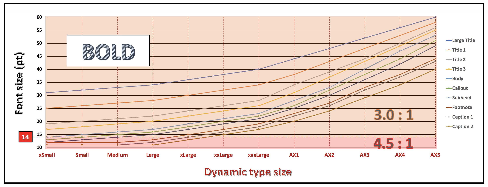
The normal font type will require a higher contrast than the previous case.
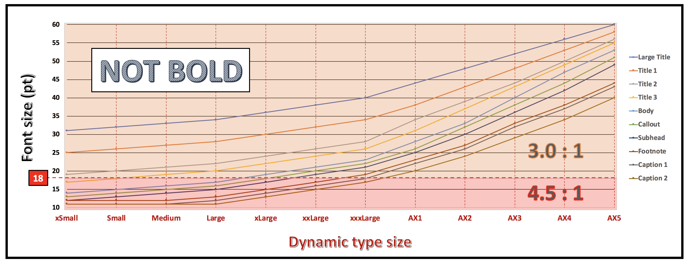
With Dynamic Type whose purpose is to increase the font size according to the user settings, the contrast isn't necessary fixed and must be adapted to the text size.

*Checklist: *
- Do not use colour as the only way of conveying information, indicating an action, requesting a response or distinguishing an element.
- The contrast between the colour of the background and the text must be appropriate (can be measured with the Colour Contrast Analyser tool).
*Users’ goal: *
Ease of reading for all users, especially the visually impaired, or people in a very bright environment (outdoors). Allow users who cannot distinguish colours or sensory information (colour blind, visually impaired, hearing impaired, mobile users in bright environment or in noisy environments…) to access the same information by other means.
** Tools: ** The Colour Contrast Analyser application can quickly measure colour contrast levels (free for Windows and Mac).
** Example of invalid contrast **
The label “film | 8:40 PM…” does not have enough contrast. It will not be readable by all users.
** Example of information conveyed through valid and invalid colour: **

Alternative text
** Target: ** everyone, especially people with visual impairments.
** When: ** as of design, content writing and during development.
*Description: *
Text alternatives are at the core of mobile accessibility. Thanks to them, a visually impaired user can use an application without loss of information.
As for images, it is important to add a text alternative when information is not available for the visually impaired/blind. This is the case of components that provide information by colour, shape, position, sound… On mobile, all components can have a text alternative, it is possible to enrich the native vocalization of an element, including a simple text.
Space on mobile is reduced, we often use abbreviations for text. However, this raises an issue for users of screen readers that vocalize abbreviations literally. To correct these vocalizations, simply place a text alternative on the text. This alternative contains the expanded text. Note that VoiceOver can recognize some common abbreviations. For example, “etc.” is vocalized “etcetera”.
Some images are frequently associated with text to give information. This is the case of “unread messages” when a badge shows the number of messages to read and which describes a “message”. In this case, the solution is to set a text alternative on the text that gives all the necessary information. For example: “3 unread messages”. One can also set this alternative on the images but in this case we must make the text “invisible” to the screen reader.
The text alternative of an element is set via the accessibilityLabel, accessibilityHint, accessibilityValue and accessibilityTrait (using the UIAccessibility protocol available on any child of UIView).
The order of vocalization is as follows: label, value, trait and hint. This order cannot be changed and vocalization is done only once.
For more technical information on these attributes, please refer to the textual alternatives on the developer guide.
*Checklist: *
- Elements that require an alternative should have one.
- The alternative text must be clear and understandable.
*Users’ goal: *
Provide access to application information to screen reader users.
** Example: **
Below is a common example of an icon that is associated with a text (badge) to add information. In our case, the “mail” icon associated with the “3” in the badge makes us understand that we have “3 unread mails”. If no text alternative is added, two vocalizations will be read “unlabelled button” and “3”. It is obvious that we must add text alternatives.
Title and header
** Target: ** everyone
** When: ** as of design and during content writing.
*Description: *
The page title is the first element vocalized or seen on a mobile screen. It makes navigation easier for everyone: at any time, we know where we are in the application.
A common mistake is to set the same title for every page of an application (or even no title at all).
iOS headers allow structuring pages providing additional information. This information is useful to the accessibility API because VoiceOver can navigate through the headers (VoiceOver wheel, header mode). This allows the user to browse the page faster.
To set an item as a header, set the accessibilityTraits attribute on the accessibilityTraitHeader value.
*Checklist: *
- Each screen must have its own title allowing us to know where we are in the application navigation (together with the back button).
- The elements identified as headers must be declared as headers for assistive tools.
*Users’ goal: *
Allow users to identify the topic of a page, to locate and get a clear idea of the content of the page without having to read it. Ease the navigation.
** Invalid example: **

Element states
** Target: ** everyone, especially people with visual impairments.
** When: ** during development.
*Description: *
If an element does not vocalize its status, nature or state, the VoiceOver user is unable to understand what is happening on the screen. Not specifying that a view is unfolded or that we have tabs are very common examples.
By default, tabs in iOS are accessible. Meanwhile, it is very common to customize the tabs’ look and feel, so it is the developer’s responsibility to provide the tab state and nature to the user via the corresponding accessibility attributes. An example is available in the “Standard components” section.
Another common instance of elements that do not vocalize their state : expandable views. Again, thanks to the text alternative title of the view, we can vocalize the state of the view for VoiceOver users.
To set this kind of information, use the accessibilityLabel and accessibilityTrait attributes.
*Checklist: *
- Any item whose status changes when using the application must vocalize its status through its text alternative. For example, an item that can be selected/unselected must vocalize its state through a text alternative.
*Users’ goal: *
Allow screen reader users to access components’ information, their status, their nature so they can use them without any difficulties.
** Example: **

Standard components
** Target: ** everyone.
** When: ** when choosing the libraries and during development.
*Description: *
Accessibility is taken into account in native components (most of the time). Additionally, the use of standard components allows the user to be in a situation or behaviour that they are already used to. Navigation through a standard interface is more comfortable.
Use native components as much as possible and change their appearance. If no standard component corresponds to the need, create a dedicated component based on a standard component while keeping the navigation and accessibility consistency.
*Users’ goal: *
Improve user navigation.
** Technical Objective: **
Improve overall maintainability. Reduce development time.
Touch target
** Target: ** everyone, especially people with motor impairments.
** When: ** as of design and during development.
*Description: *
If a touch target of a component is too small, it can prevent some users from enjoying the application. This can lead to frustration that can result in uninstalling it. Each clickable element must have a large enough touch target.
*Checklist: *
- 44 pt is the recommended touch target size for elements according to Apple (height and width); see more information on the Apple guidelines.
*Users’ goal: *
Improve user experience.
** Valid example: **
In the examples below, the black box corresponds to the size of the interactive area.
** Invalid example: **
Ghost element
** Target: ** people with visual impairments.
** When: ** during development.
*Description: *
Although invisible on the screen, some elements can be vocalized by the screen reader (elements positioned outside the visible area or hidden by other elements). The superposition of screens is frequent when designing mobile apps but it generates very heavy accessibility problems if it is not done properly from the start. A screen reader such as VoiceOver is able to read information from a view that is placed “below” another. But if the user is able to interact with this view, it totally disturbs navigation and it quickly becomes impossible.
Ghost elements are very common when creating custom alert dialogs. However, this kind of component can be accessible. Please refer to the corresponding section on the developer guide
Read the article on the use of fragments for more information.
*Checklist: *
- With the screen reader, no invisible element must be read or take focus when reading a page.
*Users’ goal: *
Allow screen reader users to navigate within the application without having hidden elements disturbing the reading of the current view.
** Invalid example: **
In the example below, the custom alert dialog has a ghost element. When VoiceOver is activated it vocalizes the content behind the current view (shown in black).
Content Control
** Target: ** everyone and especially people with visual and cognitive deficiency.
** When: ** as of design and during development.
*Description: *
On mobile, screen readers try to notify the user when there is a context change. In some cases, it can give constant vocalizations, and can therefore become inaudible, or prevent any user action. The user must control the content at any time. This is especially true with interactive content. So avoid video player launching directly in full screen mode or videos starting automatically without user action or a carousel scrolling automatically for instance.
*Checklist: *
- All interactive content must be controlled by the user (adding an accessible button to exit full-screen mode for instance).
*Users’ goal: *
Allow users to keep control on the application. Allow the screen reader user to avoid noise pollution which may affect navigation.
** Technical Objective: **
Improve natural indexation.
Changing content
** Target: ** everyone, especially people with visual impairments.
** When: ** during development.
*Description: *
When content is dynamically modified after a user action, the screen reader must notify it. Without any voice feedback, the user does not know that the content has changed.
If the content has changed dynamically after a user action, it is important that the screen reader is notified so that it triggers a vocalization. E.g. refreshing a list or a timer.
To start a vocalization, one must send a notification to the accessibility API via the UIAccessibilityPostNotification method with the UIAccessibilityAnnouncementNotification notification in parameter and the text to vocalize.
It is also recommended to notify the Accessibility API when there is a change of context. To do that, one must send a notification to the accessibility API via the UIAccessibilityPostNotification.
There are several types of notification, but the two most used are:
UIAccessibilityLayoutChangedNotification: notify that a part of the content has changed.UIAccessibilityScreenChangedNotification: notify a global change.
For more technical information, please check out the corresponding section on the developer guide for iOS.
*Checklist: *
- With a screen reader, make sure that dynamic changes are vocalized.
*Users’ goal: *
Provide access to changing content to screen reader users.
Horizontal scroll
** Target: ** everyone, especially people with visual impairments.
** When: ** as of design and during development.
*Description: *
A horizontal scroll can be very difficult to detect if no visual feedback is displayed to help the user understand that there are several pages.
Do not hesitate to display a view to indicate a horizontal scroll (dots on UIPageControl for example). When necessary, also add “next” and “previous” buttons.
*Checklist: *
- The horizontal scrolls are visually indicated.
- It must be possible to switch pages for screen reader users.
*Users’ goal: *
Provide a visual indication to users when there is horizontal scroll. Allow screen reader users to scroll horizontally.


Form
** Target: ** everyone, especially people with visual impairments.
** When: ** as of design and during development.
*Description: *
Binding the form fields with their labels provides an additional vocalization allowing the user to understand what happens when filling out a form field.
We must use the accessibilityLabel attribute to associate a label to a form field.
*Checklist: *
- Form fields must vocalize their labels.
*Users’ goal: *
Improve navigation by improving the overall understanding of the page, because form fields describing the expected input are easier to fill for visually impaired users.
Reading order
** Target: ** people with visual impairments.
** When: ** during development.
*Description: *
The reading order allows the screen reader user to get their bearings and to ensure functional coherence. It is therefore important to pay attention to it.
By default, the reading order of voice synthesis depends on the “logical” reading order (in France), from left to right and top to bottom. However, there are some cases where the screen reader cannot determine the correct order, and uses the order of xml elements, leading to inconsistent vocalizations.
It is possible to redefine the VoiceOver reading order using the UIAccessibilityContainer. The reading order is defined in a table. It is often useful to use the shouldGroupAccessibilityElement attribute to have a correct reading order in a sub-part of the page.
*Checklist: *
- Traversal order (VoiceOver) is logical and coherent.
*Users’ goal: *
Ensure logic order and coherent reading to screen reader users.
** Example: **
In this example, the default playback order depends completely on the implementation and on the order of element declaration. In this case: vol+, vol-, 1, 2, 3, 4, 5, 6, 7, 8, 9, p+, p-, 0. A more consistent reading order is 1, 2, 3, 4, 5, 6, 7, 8, 9, 0, vol +, vol-, p + p-.
Language
*Target : * people with visual impairments.
*When: * during development.
*Description: *
VoiceOver vocalization uses the default language of the mobile. Sometimes some words / texts of an application are in a different language. In order to make them properly understandable, they have to be declared in that specific language.
To change VoiceOver language pronunciation of a word or a text, use the accessibilityLanguage attribute, available via the UIAccessibility protocol.
*Checklist: *
- The words / text in a different language than the rest of the application should be vocalized in their corresponding language
*Users’ goal: *
Ensure the understanding of the application text.
Screen orientation
*Target : * everyone, especially people with visual and/or motor impairments.
*When : * as of design and during development.
*Description : * the screen orientation mustn't impact the access of an application content. It's highly recommended to :
- Implement both the portrait and the landscape modes to be easily toggled by the user if it doesn't go against some functional constraints of the application itself (
serious gamefor instance). - Provide for iPad screen sizes in order to facilitate reading and gestures.
*Checklist : *
- Perfectly detailed design guideline including all the screens to be implemented with their possible orientation constraints.
- Very accurate definition of the way the transitions between portrait and landscape modes should occur.
- Portrait and landscape modes flawless adaptation to the content thanks to a bunch of graphic tests (very important for the
Dynamic Type). - Appropriate settings in the integrated development environment.

*Users’ goal : * improve a better legibility of the content.
Accessibility options
Target : everyone.
When : as of design and during development.
Description : the accessibility options located in the mobile settings are all about to improve the experience of an impaired user who can be significantly helped by these options.
It's then primordial :
- To understand perfectly each one of these options that can have an impact during the conception or the implementation periods of an application.
- To ** test** each appropriate option so as to be sure that its purpose is completely taken into account inside the application.
The full list of these options including their purpose and their coding name is defined hereunder :
- Increase Contrast
- AssistiveTouch
- Bold Text
- Subtitles & Captioning
- Greyscale
- Guided Access
- Invert Colours
- Mono Audio
- Reduce Motion
- Reduce Transparency
- Shake to Undo
- Speak Screen
- Speak Selection
- Switch Control
- VoiceOver
- Auto-Play Video Previews ⟹ iOS 13 new feature
- Differentiate Without Colour ⟹ iOS 13 new feature
- On/Off Labels ⟹ new in iOS 13
- Increase Contrast (UIAccessibilityDarkerSystemColorsEnabled) : see the WWDC 2018 video for a detailed description.


 - **On/Off Labels** *(UIAccessibilityIsOnOffSwitchLabelsEnabled)* : once activated, this option whose **programmatic access is new in iOS 13** displays each button state.
- **On/Off Labels** *(UIAccessibilityIsOnOffSwitchLabelsEnabled)* : once activated, this option whose **programmatic access is new in iOS 13** displays each button state.

Once activated, if the accessibility option has no result in the application running, it's highly recommended to keep oneself posted of the impacted options states so as to provide the best user experience. The full list of the accessibility options with their dedicated notification is located in the developer part of this site. It may be particularly interesting to keep track of these options (de)activations with kind of indicators in order to have a better understanding of the users habits and to implement improvements accordingly.
How to test the iOS accessibility
ALL the project members should know the iOS accessibility features introduced in this site to make a perfect link between the app implementations and the users needs. Each one of these features should be seen as an important human-made element for the user comfort and not just a functional one. Whatever the design, implementation or testing area, every decision must be particularly empathetic to provide the best user experience.
Fundamental prerequisites
- Spend as much time as necessary to perfectly control the gestures (VoiceOver, Switch Control).
- Watch the examples provided by the WWDC videos.
- Assimilate the design criteria to be sure that you're following the appropriate working path.
- Create as many blank projects as needed to test a dedicated feature and be sure that it's working before introducing inside the final app coding global environment.
Working environment
Four different groups may be described as parts of every project:
- The person in charge of defining the priorities of every functionality must know the app users needs so as to accurately define the functionalities acceptance criteria and be able to check himself the desired achievement.
- The DESIGN team must put itself in the user's shoes to provide recommendations as accurate as possible according to the project demands upstream.
- The DEVELOPMENT team must rely heavily on the WWDC videos and the iOS developers guide in order to find the most appropriate solutions.
- The TEST team must perfectly control the dedicated gesture and understand every iOS accessibility feature to optimally perform every test before starting production.
Whatever the way you want to work (SCRUM, ...), all the functions described above must be present in a project. Foresee two ways of evaluation in order to make sure that the iOS accessibility recommendations have been well implemented:
- FUNCTIONAL: the user navigation among the screens must be hassle-free and provide all visual information without questions to be asked: simple, clear and fluid.
- TECHNICAL: the technical compliance of some elements must be checked (colours contrast, icons size...) while creating code tests (TDD, UI). Sometimes, this mode also confirms and solves any functional problems.
Functional review
There's no need in having technical knowledge for this part but (de)activate and use iOS accessibility features. Besides the design criteria to be followed, it's crucial to be sure that the accessibility options activated by a user are operational in the whole application. Few important criteria to be imperatively tested are introduced hereunder:
- Screen orientation: it's highly recommended to implement the landscape and portrait modes. When implemented, this functionality must be checked for each page of the application.
- Reduce motion : because visual movements may give rise to problems (nausea...) for some people, it's imperative to check the user settings dealing with animations.
- Reduce transparency : blurring effects may give rise to sighting difficulties for people having visual impairments. These effects can be weakened by the system thanks to an accessibility option that must be checked in every page it occurs.
Besides these basic criteria, there are also fundamental requirements for an accessible application:
Dynamic Type
To understand how this feature works, it's highly recommended to watch the example in this WWDC 2017 video that is detailed in the WWDC part of this site. Tests should be made with at least three devices having different screen sizes (iPhone5SE, iPhoneX and iPhone8Plus for instance) in order to imperatively check every page. Three zoom levels must be particularly scanned to determine the visual behavior at extremes:
- Lowest threshold WITHOUT accessibility.
- Highest threshold WITHOUT accessibility.
- Highest threshold WITH accessibility.
 The following points must be thoroughly checked:
- The **truncation '...' mustn't be used** and should be replaced by a hyphen at the end of the sentence.
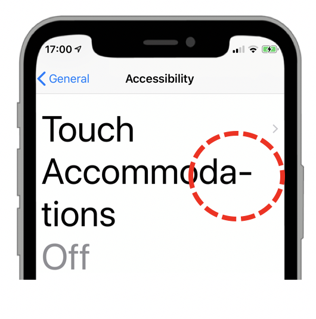
- **Illustration and icon sizes must be adapted to the magnification**. 1/. Use of a central element like [tab bar items](./dev-ios.html#graphical-elements-size), 2/. a two fingers pinch implementation to avoid the `Zoom` native feature trigger or 3/. only a [graphical element magnification](./dev-ios.html#graphical-elements-size) are potential solutions according to the context.
- **Change the text sizes in every screen** to ensure that all the elements perfectly meet the graphical contraints.
- As soon as a **corrected fault** is effective, it **must be checked for every device used for tests** to be sure of its definitive rectification.
The following points must be thoroughly checked:
- The **truncation '...' mustn't be used** and should be replaced by a hyphen at the end of the sentence.
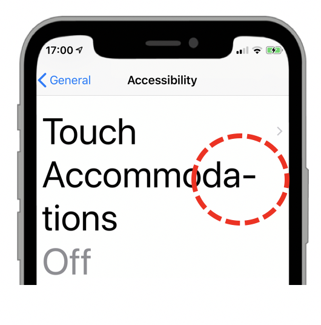
- **Illustration and icon sizes must be adapted to the magnification**. 1/. Use of a central element like [tab bar items](./dev-ios.html#graphical-elements-size), 2/. a two fingers pinch implementation to avoid the `Zoom` native feature trigger or 3/. only a [graphical element magnification](./dev-ios.html#graphical-elements-size) are potential solutions according to the context.
- **Change the text sizes in every screen** to ensure that all the elements perfectly meet the graphical contraints.
- As soon as a **corrected fault** is effective, it **must be checked for every device used for tests** to be sure of its definitive rectification.
All these tests are quite long to be performed because every screen is impacted with different devices including the changing of the text size inside each one of them.
VoiceOver
The iOS native screen reader activation drastically changes the visual behavior obtained with the common gestures, that's why its control takes a little while.
It's highly recommended to know the basic gestures before activating this feature in the device user settings.
 Don't believe that every element must be absolutely vocalized one after another : that's definitely the proper way to get a VoiceOver implementation that is anything but effective !
Keep in mind that the visual information is assimilated very quickly while the screen reader provides sequentially this information at the speed of successive selections of elements: a huge effort is necessary to get a synoptic vision of the screen and really understand what's offered.
To better deal with this situation, it's recommended to keep on navigating with the curtain screen mode that's particularly very useful for the tests of an unknown application because no human-made memorized information from a previous browsing will be provided.
Besides the design criteria to be followed, four main principles must be kept in mind when testing:
Don't believe that every element must be absolutely vocalized one after another : that's definitely the proper way to get a VoiceOver implementation that is anything but effective !
Keep in mind that the visual information is assimilated very quickly while the screen reader provides sequentially this information at the speed of successive selections of elements: a huge effort is necessary to get a synoptic vision of the screen and really understand what's offered.
To better deal with this situation, it's recommended to keep on navigating with the curtain screen mode that's particularly very useful for the tests of an unknown application because no human-made memorized information from a previous browsing will be provided.
Besides the design criteria to be followed, four main principles must be kept in mind when testing:
- The visual information must be vocally transcribed.
- The user must always know where he is and where he can go.
- The user's navigation must he hassle-free, clear and fluid.
- The number of element selections must be as small as possible.
All these tests are quite long to be performed and they require a strong empathy to suggest constructive criticism of the vocally VoiceOver information.
Switch Control
The accessibility Switch Control feature revolves around the point mode and the item mode.
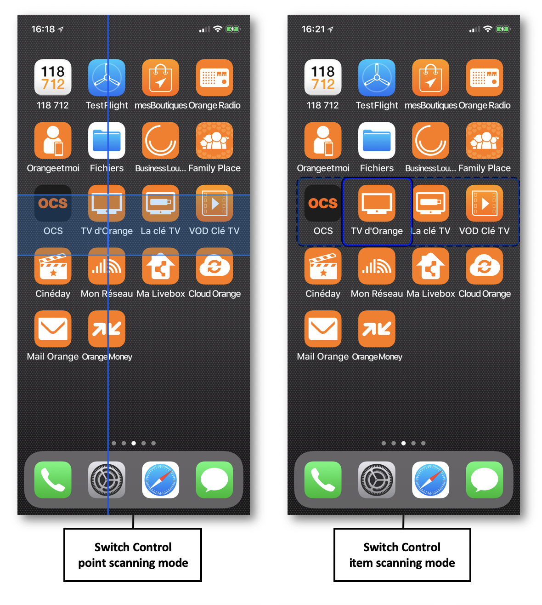
The element selection using the item mode works fine when the user interface isn't too complicated and uses native elements.
However, this mode may not be helpful according to the rationale behind some specific use cases and then needs to be customized.
In this case, the feedback information provided by the tests must be as helpful as getting the best user experience.
Note: this feature can be (de)activated in the device user settings.

Technical review
The use of this section requires more or less special expertise according to what must be checked.
Colour contrast
The colour contrast is certainly the easiest point to be checked thanks to softwares (Colour Contrast Analyzer...) or web sites (WebAIM...).
Code review
The Xcode IDE contains a very interesting tool entitled Accessibility Inspector. Its goal and way of being used won't be developed here because they're perfectly explained in this detailed WWDC video that's highly recommended to be watched.
Code testing
Many kinds of tests (TDD, *UI)* may be set up by the developers in order to maintain a stable and reliable code over time. These good practice ensure functional continuity by being informed of any deviation introduced in subsequent developments.
Mobile criteria
This base criteria for the Android and iOS Orange mobile applications avoids major accessibility errors. Its implementation does not give you the guarantee to be 100% accessible, but it is a clean bedrock so you can engage in a progressive accessibility implementation process.
Following the Orange guidelines (Design for digital platforms Guideline), available on the Orange brand site is a prerequisite to the use of this base criteria. Some elements already present in the Orange Brand (such as the use of colours) have not been included in this list of criteria.
Two versions are available:
- ** Android version ** focused on the development of applications for the Google platform, Android.
- ** iOS version ** focused on the development of applications for the Apple platform, iOS.
Android criteria
iOS criteria
Android developer guide
This guide aims to present the various accessibility options available on the Android SDK. Through different categories, this guide explains how to use the accessibility attributes / methods and provides links to the official Google documentation. Code snippets are also available to show you how to implement it.
Text alternative
Description:
On Android, the vocalization of an element is made through an attribute named contentDescription. This attribute, which accepts a single string parameter (and therefore localizable), completely redefines the text to be read by an accessibility service like TalkBack. This allows a component to be more explicit than the text displayed on the screen. For example, in the case of a button whose title is “OK”, the contentDescription attribute can indicate that the button is used to confirm an action.
The contentDescription attribute must also be used on custom elements to indicate their nature. For example, a clickable LinearLayout must have a contentDescription like “button_name, button” (it should also be focusable to be properly accessible, see the corresponding section).
Note that the contentDescription is available in any element that inherits from View. It is therefore possible to set a contentDescription on a TextView for example, as shown in the “accessibility guide - text alternative - abbreviations, dates and times” section.
Examples:
Simple example (localized):
<TextView
…
android:id="@+id/myTextviewId"
android:contentDescription="@string/criteria_alt_ex1_cd_txt2"
/>
myTextView = (TextView) findViewById(R.id.myTextviewId); myTextView.setContentDescription(getString(R.string.criteria_alt_ex1_cd_txt2));
myTextViewId.contentDescription = getString(R.string.criteria_alt_ex1_cd_txt2)Example of a Tab:
The example has tabs above and below a ViewPager in one case inTabLayout and in the other in BottomNavigationView. The tabs are no longer coded in TabHost component.
It is necessary to indicate the state and the nature of the tabs (not internationalized):
//In the layout of the activity
<android.support.constraint.ConstraintLayout
…>
<android.support.v4.view.ViewPager
android:id="@+id/viewpager"
…
>
<android.support.design.widget.TabLayout
android:id="@+id/tabtoolbar_pager"
…
</android.support.v4.view.ViewPager>
<android.support.design.widget.BottomNavigationView
android:id="@+id/navigation"
[…]
app:menu="@menu/navigation" />
</android.support.constraint.ConstraintLayout>
//In the file strings.xml
<string name="cd_tab_title_param">%1$s, tab %2$s on %3$s</string>
@Override
protected void onCreate(Bundle savedInstanceState) {
super.onCreate(savedInstanceState);
setContentView(R.layout.activity_main);
mTabLayout = (TabLayout) findViewById(R.id.tabtoolbar_pager);
mViewPager = (ViewPager) findViewById(R.id.viewpager);
mTabLayout.addOnLayoutChangeListener(mTabLayoutListener);
mTabLayout.setupWithViewPager(mViewPager);
mAdapter = new ScreenSlidePagerAdapter(getSupportFragmentManager());
mViewPager.setAdapter(mAdapter);
//At creation, initialize the contentDescription
updateTabContentDescription(0);
mViewPager.addOnPageChangeListener(new ViewPager.OnPageChangeListener() {
[…]
public void onPageSelected(int position) {
updateTabContentDescription(position);
}
});
//The BottomNavigationView is not necessarily at the bottom of the view, its position is defined in the layout.
BottomNavigationView navigation = (BottomNavigationView) findViewById(R.id.navigation);
navigation.setOnNavigationItemSelectedListener(mOnNavigationItemSelectedListener);
[…]
}
private void updateTabContentDescription(int position) {
for (int i = 0; i < mAdapter.getCount(); i++) {
TabLayout.Tab tab = mTabLayout.getTabAt(i);
String cd_param_string = getString(R.string.cd_tab_title_param,
mAdapter.getPageTitle(i), // title, first parameter see xml
i + 1, // tab number, second parameter
mAdapter.getCount()); // total number of tabs, third parameter
if (tab != null) {
tab.setContentDescription(cd_param_string);
}
//For Tablayout and BottomNavigationView, information “selected” is already vocalized.
//Either, for example: “selected, `tab title 1`, tab 1 of 5”
//or “`tab title 3`, tab 3 of 5”. Then “Double-tap to activate”.
// Setting the upper bound automatically will prevent a vocalization like:
//“selected, `tab title 4`, tab 4 of 3.", where the upper bound is inconsistent.
// For the `TabHost` implementation, it would be necessary to specify the "selected" state of the tab.
}
}
private fun updateTabContentDescription(position: Int) {
for (i in 0 until mAdapter!!.count) {
val tab = mTabLayout!!.getTabAt(i)
val cd_param_string = getString(R.string.cd_tab_title_param,
mAdapter!!.getPageTitle(i), // titre en paramètre 1 voir le xml
i + 1, // le numéro de l’onglet actuel, paramètre 2
mAdapter!!.count) // le nombre d’onglets automatique, paramètre 3
if (tab != null) {
tab.contentDescription = cd_param_string
//For Tablayout and BottomNavigationView, information “selected” is already vocalized.
//Either, for example: “selected, `tab title 1`, tab 1 of 5”
//or “`tab title 3`, tab 3 of 5”. Then “Double-tap to activate”.
// Setting the upper bound automatically will prevent with a vocalization like:
//“selected, `tab title 4`, tab 4 of 3.", where the upper bound is inconsistent.
// For the `TabHost` implementation, it would be necessary to specify the "selected" state of the tab.
}
}
}
*Link: *
Hiding elements from accessibility
Description:
It is possible via an accessibility attribute to hide elements from accessibility tools (e.g. TalkBack). By extension, it is possible to force some elements to be visible to accessibility tools.
ImportantForAccessibility: depending on the value of the attribute, it indicates whether an element is visible or not to the Accessibility API.
Auto(0): this is the default, it is the system that decides. For example, aButtonwill have its default value set to 1 (yes) whereas aLinearLayoutwill default to 2 (no).Yes(1): the view is important for accessibility. For example, it can receive the TalkBack focus.No(2): the view is not important for accessibility. It does not trigger accessibility events and is therefore ignored by accessibility services such as TalkBack.NoHideDescendants(4): the view is not important for accessibility, nor are its children views. This will hide all the items in a view to accessibility at once. Very useful on custom elements.
Note: the “importantForAccessibility” attribute is available to any element that inherits from View.
Examples:
<TextView
[…]
android:id="@+id/myTextviewId1"
android:importantForAccessibility="4"
/>
<TextView
[…]
android:id="@+id/myTextviewId2"
android:importantForAccessibility="noHideDescendants"
/>
myTextView1 = (TextView) findViewById(R.id.myTextviewId1); myTextView2 = (TextView) findViewById(R.id.myTextviewId2); myTextView1.setImportantForAccessibility(4); // JELLY_BEAN myTextView2.setImportantForAccessibility(View.IMPORTANT_FOR_ACCESSIBILITY_NO_HIDE_DESCENDANTS); // KITKAT
myTextView1.importantForAccessibility = "4" // JELLY_BEAN
myTextView2.importantForAccessibility = View.IMPORTANT_FOR_ACCESSIBILITY_NO_HIDE_DESCENDANTS // KITKAT
Link:
Trigger a vocalization
Description:
It is very easy to trigger vocalizations with TalkBack. Triggering a vocalization is very useful for dynamic content, just like a LiveRegion (see corresponding section). To trigger a vocalization, just call the announceForAccessibility method with the id parameter of the string to vocalize.
Note: the announceForAccessibility method is available on any item that inherits from View and is made in the system’s language.
Warning: we are talking about TalkBack vocalization and not TTS (Text To Speech) that can operate whether TalkBack is on or off.
Example:
It is common to check the Android version before triggering TalkBack vocalization. This is because announceForAccessibility has been introduced in Jelly Bean.
if (Build.VERSION.SDK_INT >= Build.VERSION_CODES.JELLY_BEAN) {
myView.announceForAccessibility(getString(R.string.criteria_contentchange_ex1_announce));
}
if (Build.VERSION.SDK_INT >= Build.VERSION_CODES.JELLY_BEAN) { myView.announceForAccessibility(getString(R.string.criteria_contentchange_ex1_announce)) }
Link:
Check if Talkback is on
Description:
On Android, it is possible to know whether the Accessibility API is enabled, thus whether TalkBack is enabled.
Usage:
AccessibilityManager am = (AccessibilityManager) context.getSystemService(ACCESSIBILITY_SERVICE);
boolean isAccessibilityEnabled = am.isEnabled();
val am = context.getSystemService(Context.ACCESSIBILITY_SERVICE) as AccessibilityManager val isAccessibilityEnabled = am.isEnabled
Live region (dynamic content)
Description:
You can specify to a view that it is a “live” region, it means that its content is subject to change dynamically and should in this case notify the Accessibility API. This will generate TalkBack vocalizations. A typical use case: on a form, if the user makes a mistake and an error message appears, the view containing the error message must be defined as a “live” region.
We must use the setAccessibilityLiveRegion method that takes a mode parameter for the live region. There are 3 modes:
ACCESSIBILITY_LIVE_REGION_NONE: this view is not a live region. This is the default for most views.ACCESSIBILITY_LIVE_REGION_POLITE: when a change occurs, vocalizations are triggered on the changes. These vocalizations are “polite”; they have lower priority than system vocalizations for example.ACCESSIBILITY_LIVE_REGION_ASSERTIVE: when a change occurs, vocalizations are triggered on the changes. These vocalizations are “assertive”; they have the highest priority and are immediately vocalized.
Note the setAccessibilityLiveRegion method is available on any class that inherits from View.
Example:
<TextView
[…]
android:accessibilityLiveRegion="polite" />Link:
Reading order (TalkBack)
Description:
By default, the reading order of voice synthesis depends on: the “logical” reading (in France), from left to right and top to bottom, and the xml order (order of elements declaration). It is quite possible to redefine the reading order with two attributes:
AccessibilityTraversalAfter: sets theidof a view after which this one is visited in accessibility traversal. A screen-reader must visit the content of the other view before the content of this one.AccessibilityTraversalBefore: sets theidof a view before which this one is visited in accessibility traversal. A screen-reader must visit the content of this view before the content of the one it precedes.
Note: These attributes can be used directly in the xml but also in the code via the setAccessibilityTraversalBefore and setAccessibilityTraversalAfter methods. These methods are available for any element that inherits from View.
Example:
volupButton.setAccessibilityTraversalAfter(myView.findViewById(R.id.remote0).getId());
voldownButton.setAccessibilityTraversalAfter(myView.findViewById(R.id.volup).getId());
chaineplusButton.setAccessibilityTraversalAfter(myView.findViewById(R.id.voldown).getId());
chainemoinsButton.setAccessibilityTraversalAfter(myView.findViewById(R.id.chaineplus).getId());
volupButton.accessibilityTraversalAfter = remote0Button.id voldownButton.accessibilityTraversalAfte = volupButton.id chaineplusButton.accessibilityTraversalAfter = voldownButton.id chainemoinsButton.accessibilityTraversalAfter = chaineplusButton.id
Link:
Manage the reading of headers (TalkBack)
Android Pie introduces an additional level of reading of the accessibilityHeading feature that allows you to browse the page on these titles instead of all the elements of the page.
Description :
The screen reader can read only the headers defined in a page (see the TalkBack User Guide, the “Slide Up Using a Finger” gesture). These headers allow the reader to browse the large sections of the page to see if the information sought is there, without having to listen to everything.
Example :
<TextView
[…]
android:id="@+id/myTextLevel1viewId"
android:accessibilityHeading="true"
/>Link:
Form
Description:
It is very important to bind the form fields with their labels. There are 2 major techniques to achieve this:
LabelFor: allow to specify a label to a view. This method takes theidof the view that it is associated with. This method can be used on almost any type of form field. We can also use the xmlandroid:labelForor programmaticallysetLabelFor.Hint: add an example text when the text field is empty. This method only works forTextView. Supports setting theidto a string. Can be used in the xmlandroid:hintor programmaticallysetHint.
Examples:
LabelFor in XML:
<TextView
[...]
android:labelFor="@+id/imageView11"
android:importantForAccessibility="no" />Note: It is very common, once the label is bound to its field, to hide the label from the accessibility service. This is because this one does not need to be vocalized by the Accessibility API anymore as it’s already associated with the form field (and will be vocalized by TalkBack for example).
Hint in xml:
<EditText
[...]
android:hint="@string/criteria_form_ex1_placeholder" />Links:
Text size
Description:
To make it possible for the “Huge font size” option to properly interact with the application, several points are to be respected during the development:
- Use dynamic font size: the “sp”. This unit, specific to Android, allows to have a font size proportional to the pixel density of the display. It is highly recommended to use it for text, if only for a uniform design on all types of Android devices.
- Manage content overflows: A common mistake is to use a dynamic text size (“sp”) but not to pay attention to the container size. If the text gets bigger, the container must adapt so there is no overflow. One can perfectly play with the
min-heightandheightattributes for correct results (theheightset towrap_contentandmin-heightset to the default desired height).
Link:
Accessibility events & custom views
Description:
On Android there are several events available for accessibility. You can manipulate them just like any event. They can enhance custom views that are not accessible enough. Using accessible events is not common on applications that are not intended to be used by disabled people, because other options are in most cases sufficient. Yet one must know they exist and they let you redefine the vocalization of a component.
For more information, please refer to the following links:
Links:
WebView
Description:
WebViews are a special thing on Android. First, if you want a page to be accessible, its HTML content must be accessible as well, it must follow the international standards: the WCAG2. To know the requirements and learn techniques for developing an accessible Web, please visit the following section in our site: accessibility recommendations for the Web.
Second, on Android you must ensure that the WebView allows JavaScript mWebView.getSettings().setJavaScriptEnabled(true);
In these conditions, the page displayed through the WebView properly responds to the Accessibility API.
List vocalization
Description:
Sometimes lists are not vocalized correctly: the speech synthesis is trying to vocalize the whole list at once (only the items displayed on the screen). This is especially the case when using the RecyclerView. To overcome this problem, there is a simple fix. Just set the focusable attribute to true for each item in the list. This has the effect of forcing the speech synthesis (TalkBack) to read the items one by one.
Navigating via the focus (keyboard)
Description:
To handle focus-based navigation, make sure to:
- Allow interactive elements to receive the focus: focus-based navigation only concerns interactive elements. If, for example, your application has clickable custom views, it must be ensured that these views are focusable setting the
focusableattribute totrue. - Managing the focus display: interactive elements must have the
state_focuseddefined and must be easily distinguishable when having the focus. - Managing the focus order: through the
nextFocusDown,nextFocusUp,nextFocusRight,nextFocusLeftoptions, you can specify what view should take the focus when using the down, up, right and left arrow.
Most of the time, only the two first points must be taken care of. Android is able to determine very precisely the positions of the elements between them and therefore to provide a logical and coherent reading order for the keyboard.
Note: nextFocusDown, nextFocusUp, nextFocusRight, nextFocusLeft, focusable and other focus management options are available either in the xml or programmatically.
Note: Android Pie (9, API 28) introduces a screen reader-specific focus to avoid edge effects between the screen reader focus (screenReaderFocusable) and the keyboard focus (focusable). Keyboard navigation is not sensitive to screenReaderFocusable.
Example:
Selector handling the state_focused:
<selector xmlns:android="http://schemas.android.com/apk/res/android">
<!-- Non focused states -->
<item android:state_focused="false" android:state_selected="false" android:state_pressed="false" android:drawable="@drawable/tab_unselected_tab_selector" />
<item android:state_focused="false" android:state_selected="true" android:state_pressed="false" android:drawable="@drawable/tab_selected_tab_selector" />
<!-- Focused states -->
<item android:state_focused="true" android:state_selected="false" android:state_pressed="false" android:drawable="@drawable/tab_unselected_focused_tab_selector" />
<item android:state_focused="true" android:state_selected="true" android:state_pressed="false" android:drawable="@drawable/tab_selected_focused_tab_selector" />
<!-- Pressed -->
<!-- Non focused states -->
<item android:state_focused="false" android:state_selected="false" android:state_pressed="true" android:drawable="@drawable/tab_unselected_pressed_tab_selector" />
<item android:state_focused="false" android:state_selected="true" android:state_pressed="true" android:drawable="@drawable/tab_selected_pressed_tab_selector" />
<!-- Focused states -->
<item android:state_focused="true" android:state_selected="false" android:state_pressed="true" android:drawable="@drawable/tab_unselected_pressed_tab_selector" />
<item android:state_focused="true" android:state_selected="true" android:state_pressed="true" android:drawable="@drawable/tab_selected_pressed_tab_selector" />
</selector>Link:
iOS developer guide
This guide aims to present the various iOS SDK accessibility options.
Through different categories, it explains how to use the accessibility attributes / methods and provides links to the Apple official documentation.
Code snippets are also available to show the different possible implementations { (Swift 5.0, Objective C) + (Xcode 10, iOS 12) }.
Element trait
- (void)customTraits() {
//Specified UIPageControl with the ’ajustable’ trait.
pageControl.accessibilityTraits = UIAccessibilityTraitAdjustable;
//Added header.
defaultHeaderViewCell.accessibilityTraits = UIAccessibilityTraitHeader;
}
func customTraits() {
//Specified UIPageControl with the ’ajustable’ trait.
pageControl.accessibilityTraits = .adjustable
//Added header.
defaultHeaderViewCell.accessibilityTraits = .header
}
 It's then possible to add and remove some `traits` after having checked their existence in the bitmask for instance.
It's then possible to add and remove some `traits` after having checked their existence in the bitmask for instance.
- (void)changeTraits {
//Dedicated trait set with no other option.
onePageButton.accessibilityTraits = UIAccessibilityTraitButton | UIAccessibilityTraitLink;
//Added traits to the existing ones.
pageControl.accessibilityTraits |= UIAccessibilityTraitHeader; //Only one trait.
pageControl.accessibilityTraits |= UIAccessibilityTraitButton + UIAccessibilityTraitLink; //Many traits.
//Remove a trait.
onePageButton.accessibilityTraits &= ~UIAccessibilityTraitLink;
//Check out the bitmask trait existence.
if ((pageControl.accessibilityTraits & UIAccessibilityTraitHeader) != 0) {
// Do the job if '.header' is one of the traits...
}
}
func changeTraits() {
//Dedicated trait set with no other option.
onePageButton.accessibilityTraits = [.button, .link]
//Added traits to the existing ones.
pageControl.accessibilityTraits.insert(.header) //Only one trait.
pageControl.accessibilityTraits.formUnion([.button, .link]) //Many traits.
//Remove a trait.
onePageButton.accessibilityTraits.remove(.link)
//Check out the bitmask trait existence.
if (pageControl.accessibilityTraits.rawValue & UIAccessibilityTraits.header.rawValue == UIAccessibilityTraits.header.rawValue) {
// Do the job if '.header' is one of the traits...
}
}
Text alternatives
These accessibility attributes are available via the builder interface but also programmatically. Anything inheriting from UIView has these attributes by default. These attributes accept an optional string, and are therefore easily localizable.
@interface ChangeTextView() {
__weak IBOutlet UILabel * myLabel;
__weak IBOutlet UIProgressView * myProgressView;
}
@end
@implementation ChangeTextView
(void)viewDidAppear:(BOOL)animated {
[super viewDidAppear:animated];
myLabel.accessibilityLabel = @"hello";
myLabel.accessibilityHint = @"This is an added comment.";
myProgressView.accessibilityValue = @"45 per cent";
}
@end
class ChangeTextView: UIViewController {
@IBOutlet weak var myLabel: UILabel!
@IBOutlet weak var myProgressView: UIProgressView!
override func viewDidAppear(_ animated: Bool) {
super.viewDidAppear(animated)
myLabel.accessibilityLabel = "hello"
myLabel.accessibilityHint = "This is an added comment."
myProgressView.accessibilityValue = "45 per cent"
}
}
Date, time and numbers
 Incoming data must be formatted to obtain a natural and understandable descriptive vocalization.
Incoming data must be formatted to obtain a natural and understandable descriptive vocalization.

NSDateFormatter * dateFormatter = [[NSDateFormatter alloc]init];
[dateFormatter setDateFormat:@"dd/MM/yyyy HH:mm"];
NSDate * date = [dateFormatter dateFromString:@"01/04/2015 05:30"];
dateLabel.text = [NSDateFormatter localizedStringFromDate:date
dateStyle:NSDateFormatterShortStyle
timeStyle:NSDateFormatterNoStyle];
dateLabel.accessibilityLabel = [NSDateFormatter localizedStringFromDate:date
dateStyle:NSDateFormatterMediumStyle
timeStyle:NSDateFormatterNoStyle];
hourLabel.text = [NSDateFormatter localizedStringFromDate:date
dateStyle:NSDateFormatterNoStyle
timeStyle:NSDateFormatterShortStyle];
NSDateComponents * hourComponents = [[NSCalendar currentCalendar] components:NSCalendarUnitHour | NSCalendarUnitMinute
fromDate:date];
hourLabel.accessibilityLabel = [NSDateComponentsFormatter localizedStringFromDateComponents:hourComponents
unitsStyle:NSDateComponentsFormatterUnitsStyleSpellOut];
let dateFormatter = DateFormatter()
dateFormatter.dateFormat = "dd/MM/yyyy HH:mm"
let date = dateFormatter.date(from: "01/04/2015 05:30")
dateLabel.text = DateFormatter.localizedString(from: date!,
dateStyle: .short,
timeStyle: .none)
dateLabel.accessibilityLabel = DateFormatter.localizedString(from: date!,
dateStyle: .medium,
timeStyle: .none)
hourLabel.text = DateFormatter.localizedString(from: date!,
dateStyle: .none,
timeStyle: .short)
let hourComponents = Calendar.current.dateComponents([.hour, .minute],
from: date!)
hourLabel.accessibilityLabel = DateComponentsFormatter.localizedString(from: hourComponents,
unitsStyle: .spellOut)
 As the previous sheet dealing with date and time, the incoming data must be formatted to be analyzed and vocalized according to the proper value of the explained number.
As the previous sheet dealing with date and time, the incoming data must be formatted to be analyzed and vocalized according to the proper value of the explained number.

NSNumber * numberValue = @54038921.7;
NSNumberFormatter * numberFormatter = [[NSNumberFormatter alloc]init];
numberFormatter.numberStyle = NSNumberFormatterDecimalStyle;
numberLabel.text = [numberFormatter stringFromNumber:numberValue];
numberLabel.accessibilityLabel = [NSNumberFormatter localizedStringFromNumber:numberValue
numberStyle:NSNumberFormatterSpellOutStyle];
let numberValue = NSNumber(value: 54038921.7)
numberLabel.text = NumberFormatter.localizedString(from: numberValue,
number: .decimal)
numberLabel.accessibilityLabel = NumberFormatter.localizedString(from: numberValue,
number: .spellOut)
 The idea of this format is based on a comma separation of each pair of figures that will provide the vocal punctuation.
The idea of this format is based on a comma separation of each pair of figures that will provide the vocal punctuation.

NSString * phoneNumberValue = @"06.11.22.33.06";
NSArray * phoneNumberElts = [phoneNumberValue componentsSeparatedByString:@"."];
NSNumberFormatter * nbFormatter = [[NSNumberFormatter alloc]init];
nbFormatter.numberStyle = NSNumberFormatterSpellOutStyle;
NSMutableString * spelledOutString = [[NSMutableString alloc]init];
[phoneNumberElts enumerateObjectsUsingBlock:^(id _Nonnull obj,
NSUInteger idx,
BOOL * _Nonnull stop) {
NSString * elt = (NSString *)obj;
if (idx != 0) {
[spelledOutString appendString:@","];
}
if ([elt hasPrefix:@"0"]) {
NSString * firstFigure = [nbFormatter stringFromNumber:@([[elt substringToIndex:1] integerValue])];
NSString * secondFigure = [nbFormatter stringFromNumber:@([[elt substringFromIndex:1] integerValue])];
[spelledOutString appendString:firstFigure];
[spelledOutString appendString:secondFigure];
} else {
[spelledOutString appendString:[nbFormatter stringFromNumber:@([elt integerValue])]];
}
}];
phoneNumberLabel.text = phoneNumberValue;
phoneNumberLabel.accessibilityLabel = spelledOutString;
let phoneNumberValue = "06.11.22.33.06"
let phoneNumberElts = phoneNumberValue.components(separatedBy: ".")
let nbFormatter = NumberFormatter()
nbFormatter.numberStyle = .spellOut
var spelledOutString = String()
for (index, elt) in phoneNumberElts.enumerated() {
if (index != 0) {
spelledOutString.append(",")
}
if (elt.hasPrefix("0")) {
let firstFigureValue = Int(String(elt[elt.startIndex]))!
let firstFigure = nbFormatter.string(from: NSNumber(value:firstFigureValue))
spelledOutString.append(firstFigure!)
let secondFigureValue = Int(String(elt[elt.index(elt.startIndex, offsetBy: 1)]))!
let secondFigure = nbFormatter.string(from: NSNumber(value:secondFigureValue))
spelledOutString.append(secondFigure!)
} else {
let figure = nbFormatter.string(from: NSNumber(value:Int(elt)!))
spelledOutString.append(figure!)
}
}
phoneNumberLabel.text = phoneNumberValue
phoneNumberLabel.accessibilityLabel = spelledOutString
Trigger a vocalization
UIAccessibilityPostNotification(UIAccessibilityAnnouncementNotification,
@"This is a VoiceOver message.");
UIAccessibility.post(notification: .announcement,
argument: "This is a VoiceOver message.")
Change the vocalization language
- (IBAction)tapHere:(UIButton *)sender {
myLabel.accessibilityLanguage = @"fr";
myLabel.accessibilityLabel = @"Ceci est un nouveau label. Merci.";
UIAccessibilityPostNotification(UIAccessibilityLayoutChangedNotification, myLabel);
}
@IBAction func tapHere(_ sender: UIButton) {
myLabel.accessibilityLanguage = "fr"
myLabel.accessibilityLabel = "Ceci est un nouveau label. Merci."
UIAccessibility.post(notification: UIAccessibility.Notification.layoutChanged,
argument: myLabel)
}
Notify a content change
//The element 'myLabel' is focused and vocalized with its new value.
- (IBAction)tapHere:(UIButton *)sender {
myLabel.accessibilityLabel = @"This is a new label.";
UIAccessibilityPostNotification(UIAccessibilityLayoutChangedNotification, myLabel);
}
//The first accessible element in the page is focused and vocalized with a sound like announcing a new page.
(IBAction)clic:(UIButton *)sender {
UIAccessibilityPostNotification(UIAccessibilityScreenChangedNotification, nil);
}
//The element 'myLabel' is focused and vocalized with its new value.
@IBAction func tapHere(_ sender: UIButton) {
myLabel.accessibilityLabel = "This is a new label."
UIAccessibility.post(notification: UIAccessibility.Notification.layoutChanged,
argument: myLabel)
}
//The first accessible element in the page is focused and vocalized with a sound like announcing a new page.
@IBAction func clic(_ sender: UIButton) {
UIAccessibility.post(notification: UIAccessibility.Notification.screenChanged,
argument: nil)
}
Hide elements
The accessibilityElement attribute is available via the interface builder but can also be used directly through the code.
The other two attributes are available only through the code.

- (void)viewDidAppear:(BOOL)animated {
[super viewDidAppear:animated];
//Creation of an element inside which 2 other children elements will be inserted.
CGRect redParentViewRect = CGRectMake(100.0, 100.0, 40.0, 40.0);
UIView * myRedParentView = [[UIView alloc]initWithFrame:redParentViewRect];
myRedParentView.backgroundColor = [UIColor redColor];
[self.view addSubview:myRedParentView];
//The target element musn't be accessible so as to be considered as a container to its children elements.
//If this attribute is 'YES', the target element will be the only one accessible element.
myRedParentView.isAccessibilityElement = NO;
//The elements contained in the target element won't be accessible even if they're defined as such.
//If this attribute is 'NO' and the previous one is 'NO', only the children elements will be accessible.
myRedParentView.accessibilityElementsHidden = NO;
[self createViewWithColor:[UIColor yellowColor]
inside:myRedParentView];
[self createViewWithColor:[UIColor blueColor]
inside:myRedParentView];
}
(void)createViewWithColor:(UIColor*)color
inside:(UIView*)parentView {
float delta = (color == [UIColor yellowColor]) ? 0.0 : 20.0;
CGRect rect = CGRectMake(10.0 + delta, 10.0 + delta, 10.0, 10.0);
UIView * theView = [[UIView alloc]initWithFrame:rect];
theView.backgroundColor = color;
[parentView addSubview:theView];
theView.isAccessibilityElement = YES;
}
override func viewDidAppear(_ animated: Bool) {
super.viewDidAppear(animated)
//Creation of an element inside which 2 other children elements will be inserted.
let redParentViewRect = CGRect.init(x: 100.0,
y: 100.0,
width: 40.0,
height: 40.0)
let myParentView = UIView.init(frame: parentViewRect)
myRedParentView.backgroundColor = .red
self.view.addSubview(myRedParentView)
//The target element musn't be accessible so as to be considered as a container to its children elements.
//If this attribute is 'true', the target element will be the only one accessible element.
myRedParentView.isAccessibilityElement = true
//The elements contained in the target element won't be accessible even if they're defined as such.
//If this attribute is 'false' and the previous one is 'false', only the children elements will be accessible.
myRedParentView.accessibilityElementsHidden = false
self.createViewWithColor(.yellow, inside: myRedParentView)
self.createViewWithColor(.blue, inside: myRedParentView)
}
func createViewWithColor(_ color:UIColor, inside parentView:UIView) {
let delta:CGFloat = ((color == .yellow) ? 0.0 : 20.0)
let rect = CGRect.init(x: 10.0 + delta,
y: 10.0 + delta,
width: 10.0,
height: 10.0)
let theView = UIView.init(frame: rect)
theView.backgroundColor = color
parentView.addSubview(theView)
theView.isAccessibilityElement = true
}
Grouping elements
#import "MyViewController.h"
#import "MyWrapView.h"
@interface MyViewController ()
@property (weak, nonatomic) IBOutlet UILabel * myLabel;
@property (weak, nonatomic) IBOutlet UISwitch * mySwitch;
@end
@implementation MyViewController
(void)viewDidAppear:(BOOL)animated {
[super viewDidAppear:animated];
//Create the view that will encapsulate the 'label' and the 'Switch Control'.
MyWrapView * wrap = [[MyWrapView alloc] initWith:_myLabel
and:_mySwitch];
[self.view addSubview:wrap];
}
@end
class MyViewController: UIViewController {
@IBOutlet weak var myLabel: UILabel!
@IBOutlet weak var mySwitch: UISwitch!
override func viewDidAppear(_ animated: Bool) {
super.viewDidAppear(animated)
//Create the view that will encapsulate the 'label' and the 'Switch Control'.
let wrap = MyWrapView.init(with: myLabel,
and: mySwitch)
self.view.addSubview(wrap)
}
}
... and implement the wrapper class to define accurately the action when a double tap occurs :
@implementation MyWrapView
//Indexes for the array containing all the wrapped elements.
int indexLabel = 0;
int indexSwitch = 1;
- (instancetype)initWith:(UILabel *)label and:(UISwitch *)aSwitch {
CGRect viewFrame = CGRectUnion(label.frame, aSwitch.frame);
MyWrapView * wrapView = [[MyWrapView alloc]initWithFrame:viewFrame];
wrapView.accessibilityElements = @[label, aSwitch];
NSString * switchValue = (aSwitch.isOn) ? @"on" : @"off";
wrapView.isAccessibilityElement = YES;
wrapView.accessibilityLabel = [NSString stringWithFormat:@"the switch control is %@", switchValue.description];
wrapView.accessibilityHint = @"tap twice to change the switch control status.";
return wrapView;
}
//Function called by the system when a double tap occurs on the selected wrapper.
- (BOOL)accessibilityActivate {
UISwitch * theSwitch = self.accessibilityElements[indexSwitch];
[theSwitch setOn:!(theSwitch.isOn)];
NSString * switchValue = (theSwitch.isOn) ? @"on" : @"off";
self.accessibilityLabel = [NSString stringWithFormat:@"the switch control is %@", switchValue.description];
return YES;
}
@end
class MyWrapView: UIView {
//Indexes for the array containing all the wrapped elements.
let indexLabel = 0
let indexSwitch = 1
override init(frame: CGRect) {
super.init(frame: frame)
}
required init?(coder aDecoder: NSCoder) {
super.init(coder: aDecoder)
}
convenience init(with label: UILabel,and aSwitch: UISwitch) {
let viewFrame = label.frame.union(aSwitch.frame)
self.init(frame: viewFrame)
self.accessibilityElements = [label, aSwitch]
let switchValue = (aSwitch.isOn) ? "on" : "off"
self.isAccessibilityElement = true
self.accessibilityLabel = "the switch control is " + switchValue.description
self.accessibilityHint = "tap twice to change the switch control status."
}
//Function called by the system when a double tap occurs on the selected wrapper.
override func accessibilityActivate() -> Bool {
let theSwitch = self.accessibilityElements?[indexSwitch] as? UISwitch
theSwitch?.setOn(!((theSwitch?.isOn)!), animated: false)
let switchValue = (theSwitch?.isOn)! ? "on" : "off"
self.accessibilityLabel = "the switch control is " + switchValue.description
return true
}
}

@interface ActivationPointViewController ()
@property (weak, nonatomic) IBOutlet UIButton * myButton;
@property (weak, nonatomic) IBOutlet UILabel * myLabel;
@property (weak, nonatomic) IBOutlet UISwitch * mySwitch;
@end
@implementation ActivationPointViewController
UIAccessibilityElement * elt;
(void)viewDidAppear:(BOOL)animated {
[super viewDidAppear:animated];
[_mySwitch addTarget:self
action:@selector(configChanged:)
forControlEvents:UIControlEventValueChanged];
elt = [[UIAccessibilityElement alloc]initWithAccessibilityContainer:self.view];
CGRect a11yFirstEltFrame = CGRectUnion(_myLabel.frame, _myButton.frame);
CGRect a11yEltFrame = CGRectUnion(a11yFirstEltFrame, _mySwitch.frame);
elt.accessibilityLabel = @"regrouping elements";
elt.accessibilityHint = @"double tap to change the switch control status";
elt.accessibilityFrameInContainerSpace = a11yEltFrame;
elt.accessibilityActivationPoint = [_mySwitch center];
self.view.accessibilityElements = @[elt];
}
(void)configChanged:(UISwitch *)sender {
NSString * switchValue = _mySwitch.on ? @"on" : @"off";
elt.accessibilityLabel = [NSString stringWithFormat:@"the switch control is %@", switchValue.description];
}
@end
class ActivationPointViewController: UIViewController {
@IBOutlet weak var myButton: UIButton!
@IBOutlet weak var myLabel: UILabel!
@IBOutlet weak var mySwitch: UISwitch!
var elt: UIAccessibilityElement?
override func viewDidAppear(_ animated: Bool) {
super.viewDidAppear(animated)
mySwitch.addTarget(self,
action: #selector(configChanged),
for: .valueChanged)
elt = UIAccessibilityElement(accessibilityContainer: self.view!)
let a11yEltFrame = (myLabel.frame.union(myButton.frame)).union(mySwitch.frame)
if let elt = elt {
elt.accessibilityLabel = "regrouping elements"
elt.accessibilityHint = "double tap to change the switch control status"
elt.accessibilityFrameInContainerSpace = a11yEltFrame
elt.accessibilityActivationPoint = mySwitch.center
self.view.accessibilityElements = [elt]
}
}
@objc func configChanged(sender: UISwitch){
if let configGroup = elt {
let switchValue = (mySwitch?.isOn)! ? "on" : "off"
configGroup.accessibilityLabel = "the switch control is " + switchValue.description
}
}
}
Another grouping elements case could use the shouldGroupAccessibilityChildren attribute which is a Boolean that indicates whether VoiceOver must group its children views. This allows making unique vocalizations or define a particular reading order for a part of the page (see Reading order section for further information).
Reading order

__weak IBOutlet UIView * blueBlock;
__weak IBOutlet UIView * greyColumn;
(void)viewDidAppear:(BOOL)animated {
[super viewDidAppear:animated];
//Reads the first three numbers in the grey column.
greyColumn.shouldGroupAccessibilityChildren = YES;
//Reads 6, 8, 9 and 5 in this order inside the blue block.
blueBlock.isAccessibilityElement = NO;
blueBlock.accessibilityElements = @[key_6,
key_8,
key_9,
key_5];
}
@IBOutlet weak var greyColumn: UIView!
@IBOutlet weak var blueBlock: UIView!
override func viewDidAppear(_ animated: Bool) {
super.viewDidAppear(animated)
//Reads the first three numbers in the grey column.
greyColumn.shouldGroupAccessibilityChildren = true
//Reads 6, 8, 9 and 5 in this order inside the blue block.
blueBlock.isAccessibilityElement = false
blueBlock.accessibilityElements = [key_6!,
key_8!,
key_9!,
key_5!]
}
Focus an element
Overriden inside a view controller, these elements will be helpless if you think they will be called when an accessible element is focused. However, if they are implemented in the accessible element itself, you won't be disappointed. This mistake is due to the informal aspect of the protocol that allows an override of its methods inside an inherited NSObject element even if it's not accessible... like a view controller for instance.
#import "UIView+focus.h"
@implementation UIView (focus)
(void)accessibilityElementDidBecomeFocused {
if ([self accessibilityElementIsFocused]) {
NSLog(@"My element has become focused.");
}
}
(void)accessibilityElementDidLoseFocus {
if ([self accessibilityElementIsFocused]) {
NSLog(@"My element has lost focus.");
}
}
(BOOL)accessibilityElementIsFocused {
if ([self.accessibilityIdentifier isEqualToString:@"myAccessibleElt"]) {
return YES;
} else {
return NO;
}
}
@end
extension UIView {
override open func accessibilityElementDidBecomeFocused() {
if self.accessibilityElementIsFocused() {
print("My element has become focused.")
}
}
override open func accessibilityElementDidLoseFocus() {
if self.accessibilityElementIsFocused() {
print("My element has lost focus.")
}
}
override open func accessibilityElementIsFocused() -> Bool {
if (self.accessibilityIdentifier == "myAccessibleElt") {
return true
} else {
return false
}
}
}
Modify the focus area of VoiceOver
 By keeping this default value, one might unwillingly activate the element in the middle of the frame only by activating the created regroupment.
By keeping this default value, one might unwillingly activate the element in the middle of the frame only by activating the created regroupment.

float xVal;
float yVal;
float widthVal;
float heightVal;
(void)viewDidAppear:(BOOL)animated {
[super viewDidAppear:animated];
xVal = myLabel.accessibilityFrame.origin.x;
yVal = myLabel.accessibilityFrame.origin.y;
widthVal = myLabel.accessibilityFrame.size.width;
heightVal = myLabel.accessibilityFrame.size.height;
}
//First way to enlarge the focus area.
(IBAction)tapHere:(UIButton *)sender {
myLabel.accessibilityFrame = CGRectMake(xVal,
yVal,
widthVal + 100.0,
heightVal+ 100.0);
UIAccessibilityPostNotification(UIAccessibilityLayoutChangedNotification, myLabel);
}
//Second way to enlarge the focus area (Bezier).
(IBAction)clic:(UIButton *)sender {
UIBezierPath * bezierPath = [UIBezierPath bezierPath];
[bezierPath moveToPoint:CGPointMake(xVal, yVal)];
[bezierPath addLineToPoint:CGPointMake(xVal + widthVal + 100.0,
yVal)];
[bezierPath addLineToPoint:CGPointMake(xVal + widthVal + 100.0,
yVal + heightVal+ 100.0)];
[bezierPath addLineToPoint:CGPointMake(xVal,
yVal + heightVal+ 100.0)];
[bezierPath closePath];
myLabel.accessibilityPath = bezierPath;
UIAccessibilityPostNotification(UIAccessibilityLayoutChangedNotification, myLabel);
}
var xVal: CGFloat = 0.0
var yVal: CGFloat = 0.0
var widthVal: CGFloat = 0.0
var heightVal: CGFloat = 0.0
override func viewDidAppear(_ animated: Bool) {
super.viewDidAppear(animated)
xVal = myLabel.accessibilityFrame.origin.x;
yVal = myLabel.accessibilityFrame.origin.y;
widthVal = myLabel.accessibilityFrame.size.width;
heightVal = myLabel.accessibilityFrame.size.height;
}
//First way to enlarge the focus area.
@IBAction func clicHere(_ sender: UIButton) {
myLabel.accessibilityFrame = CGRect.init(x: xVal,
y: yVal,
width: widthVal + 100.0,
height: heightVal + 100.0)
UIAccessibility.post(notification: UIAccessibility.Notification.layoutChanged,
argument: myLabel)
}
//Second way to enlarge the focus area (Bezier).
@IBAction func clic(_ sender: UIButton) {
let bezierPath = UIBezierPath.init()
bezierPath.move(to: CGPoint.init(x: xVal, y: yVal))
bezierPath.addLine(to: CGPoint.init(x: xVal + widthVal + 100.0,
y: yVal))
bezierPath.addLine(to: CGPoint.init(x: xVal + widthVal + 100.0,
y: yVal + heightVal + 100.0))
bezierPath.addLine(to: CGPoint.init(x: xVal,
y: yVal + heightVal + 100.0))
bezierPath.close()
myLabel.accessibilityPath = bezierPath
UIAccessibility.post(notification: UIAccessibility.Notification.screenChanged,
argument: myLabel)
}
Text size
 The following steps should be respected in order to easily use this API :
- **Use the text styles** available with the application iOS version.
The following steps should be respected in order to easily use this API :
- **Use the text styles** available with the application iOS version.
 - Choose the system font to facilitate your programing even if the use of other fonts is well assisted by the `UIFontMetrics` new class (iOS11).
- Choose the system font to facilitate your programing even if the use of other fonts is well assisted by the `UIFontMetrics` new class (iOS11).
__weak IBOutlet UILabel * fontHeadline;
__weak IBOutlet UILabel * fontFootNote;
//Use of the default native font.
fontFootNote.font = [UIFont preferredFontForTextStyle:UIFontTextStyleHeadline];
//Customed font definition for a header.
UIFont * fontHead = [UIFont fontWithName:@"Chalkduster" size:30.0];
UIFontMetrics * fontHeadMetrics = [[UIFontMetrics alloc]initForTextStyle:UIFontTextStyleHeadline];
fontHeadline.font = [fontHeadMetrics scaledFontForFont:fontHead];
@IBOutlet weak var fontHeadline: UILabel!
@IBOutlet weak var fontFootNote: UILabel!
//Use of the default native font for a header.
fontFootNote.font = .preferredFont(forTextStyle: .headline)
//Customed font definition for a header.
let fontHead = UIFont(name: "Chalkduster", size: 30.0)
let fontHeadMetrics = UIFontMetrics(forTextStyle: .headline)
fontHeadline.font = fontHeadMetrics.scaledFont(for: fontHead!)
Listen to the font size settings change event UIContentSizeCategoryDidChange or directly use the property adjustsFontForContentSizeCategory to have an automatic update of your system font size if you're programming in iOS10 (this attribute applies to custom fonts only with the
UIFontMetricsclass). Note that the traitCollectionDidChange method that belongs to theUITraitEnvironmentinformal protocol may also be used in this context because it will be called as soon as the iOS interface environment changes (class/content size, portrait/landscape).//Listens to the notification dealing with the font size changing from the mobile settings. [[NSNotificationCenter defaultCenter] addObserver:self selector:@selector(methodToBeCalled:) name:UIContentSizeCategoryDidChangeNotification object:nil]; //Automatic changing of the font size without listening to the previous notification. fontHeadline.adjustsFontForContentSizeCategory = YES; - (void)methodToBeCalled:(NSNotification *)notification { //When handling the font size change event, you must redisplay the affected elements. fontFootNote.font = [UIFont preferredFontForTextStyle:UIFontTextStyleFootnote]; }//Listens to the notification dealing with the font size changing from the mobile settings. NotificationCenter.default.addObserver(self,
selector:#selector(methodToBeCalled(notification:)), name: UIContentSizeCategory.didChangeNotification, object: nil)//Automatic changing of the font size without listening to the previous notification. fontHeadline.adjustsFontForContentSizeCategory = true
@objc func methodToBeCalled(notification: Notification) {
//When handling the font size change event, you must redisplay the affected elements. fontFootNote.font = UIFont.preferredFont(forTextStyle: .footnote)}
Be careful that the containers fit their contents: using constraints is the best way to perform this task using dynamic values.
Don't forget to adapt the color contrast to the text size.
Truncation hyphen
@interface TruncationHyphen () {
__weak IBOutlet UILabel * myLabel;
}
@end
@implementation TruncationHyphen
- (void)viewDidLoad {
[super viewDidLoad];
NSString * myString = @"floccinaucinihilipilification";
NSMutableParagraphStyle * paraph = [[NSMutableParagraphStyle alloc] init];
paraph.alignment = NSTextAlignmentJustified;
paraph.hyphenationFactor = 1.0;
UIFont * myFont = [UIFont fontWithName:@"HoeflerText-Black" size:18.0];
UIFont * myTextFont = [[UIFontMetrics metricsForTextStyle:UIFontTextStyleTitle1] scaledFontForFont:myFont];
NSDictionary * attributesDictionary = @{NSFontAttributeName:myTextFont};
NSMutableAttributedString * myText = [[NSMutableAttributedString alloc]initWithString:myString
attributes:attributesDictionary];
[myText addAttribute:NSParagraphStyleAttributeName
value:paraph
range:NSMakeRange(0, 1)];
myLabel.attributedText = myText;
}
@end
class TruncationHyphen: UIViewController {
@IBOutlet weak var myLabel: UILabel!
override func viewDidLoad() {
super.viewDidLoad()
let myString = "floccinaucinihilipilification"
let paraph = NSMutableParagraphStyle()
paraph.alignment = .justified
paraph.hyphenationFactor = 1.0
let myTextFont = UIFontMetrics(forTextStyle: .title1).scaledFont(for:UIFont(name:"HoeflerText-Black", size:18)!)
let myText = NSMutableAttributedString(string:myString,
attributes: [.font: myTextFont])
myText.addAttribute(.paragraphStyle,
value: paraph,
range: NSMakeRange(0,1))
myLabel.attributedText = myText
}
}
Graphical elements size
 4. If a **tab bar** or a **tool bar** is used in the application, first repeat the previous 3 steps for each image included in the items to be enlarged in the middle of the screen and then link the image to its appropriate item :
4. If a **tab bar** or a **tool bar** is used in the application, first repeat the previous 3 steps for each image included in the items to be enlarged in the middle of the screen and then link the image to its appropriate item :
 **WARNING : don't forget to check out your layout with these new images larger sizes.**
An application with a tab bar, whose second bar item displays the Orange logo (added `Aspect Fit` content mode and constraints to stretch the image view), is created to test the features exposed in the description.
With the `Larger Accessibility Sizes` activation in the settings (see the previous section), one can easily note in the application :
- A larger Orange image size.
- A larger version of the bar item in an overlay if you touch and hold over it.
**WARNING : don't forget to check out your layout with these new images larger sizes.**
An application with a tab bar, whose second bar item displays the Orange logo (added `Aspect Fit` content mode and constraints to stretch the image view), is created to test the features exposed in the description.
With the `Larger Accessibility Sizes` activation in the settings (see the previous section), one can easily note in the application :
- A larger Orange image size.
- A larger version of the bar item in an overlay if you touch and hold over it.

Continuous adjustable values
 It's hard to render what's happening when the changing isn't graphically or vocally notified.
It's hard to render what's happening when the changing isn't graphically or vocally notified.
 The focus must change to :
- Get each element that increases or decreases the value.
- Know the value provided by the `label`.
The focus must change to :
- Get each element that increases or decreases the value.
- Know the value provided by the `label`.
Moreover, there is no real time notification dealing with the value changing.
Nothing is definitely blocking in use but these latest remarks lead to a new design for this example that used to be so simple.
The rationale behind is to be able to change the stepper value, to be informed of this modification and to know the new value thanks to a single and unique object.
Group the stepperand the label (a StackView should do the job) then put UIAccessibilityTraitAdjustable as a new trait for this new accessible group.
This trait is MANDATORY linked to the accessibilityIncrement() and accessibilityDecrement() methods that must be implemented to define the continous way of changing the value.
As a result, all the previous constraints are removed and a hint is natively provided by this trait to mention the proper way of using this object.

- To get this result, the container class {
stepper+label} is first created to allow the delegation for the future value changing.
-===== StepperWrapper.h =====-
NS_ASSUME_NONNULL_BEGIN
@class StepperWrapper;
@protocol AdjustableForAccessibilityDelegate <NSObject>
- (void)adjustableDecrementForView:(StepperWrapper *)view;
- (void)adjustableIncrementForView:(StepperWrapper *)view;
@end
@interface StepperWrapper : UIStackView
@property(nonatomic,weak) id <AdjustableForAccessibilityDelegate> delegate;
@end
NS_ASSUME_NONNULL_END
-===== StepperWrapper.m =====-
NS_ASSUME_NONNULL_BEGIN
@implementation StepperWrapper
- (instancetype)initWithCoder:(NSCoder *)coder {
self = [super initWithCoder:coder];
self.isAccessibilityElement = YES;
self.accessibilityTraits = UIAccessibilityTraitAdjustable;
return self;
}
- (void)accessibilityDecrement {
if ([_delegate respondsToSelector:@selector(adjustableDecrementForView:)]) {
[_delegate adjustableDecrementForView:self];
}
}
- (void)accessibilityIncrement {
if ([_delegate respondsToSelector:@selector(adjustableIncrementForView:)]) {
[_delegate adjustableIncrementForView:self];
}
}
protocol AdjustableForAccessibilityDelegate: class {
func adjustableDecrementFor(_ view: StepperWrapper)
func adjustableIncrementFor(_ view: StepperWrapper)
}
class StepperWrapper: UIStackView {
weak var delegate: AdjustableForAccessibilityDelegate?
override init(frame: CGRect) {
super.init(frame: frame)
}
required init(coder: NSCoder) {
super.init(coder: coder)
isAccessibilityElement = true
accessibilityTraits = .adjustable
}
override func accessibilityDecrement() {
delegate?.adjustableDecrementFor(self)
}
override func accessibilityIncrement() {
delegate?.adjustableIncrementFor(self)
}
}
- Next, the two methods of the implemented protocol must be defined before updating and vocally presenting the new value in the ViewController.
NS_ASSUME_NONNULL_BEGIN
@interface ContinuousAdjustableValues () <AdjustableForAccessibilityDelegate>
@property (weak, nonatomic) IBOutlet StepperWrapper * stepperStackViewAccess;
@property (weak, nonatomic) IBOutlet UIStepper * stepperAccess;
@property (weak, nonatomic) IBOutlet UILabel * stepperValueAccess;
@end
@implementation ContinuousAdjustableValues
- (void)viewWillAppear:(BOOL)animated {
[super viewWillAppear:animated];
_stepperStackViewAccess.delegate = self;
_stepperStackViewAccess.accessibilityLabel = @"increase or decrease the value";
_stepperStackViewAccess.accessibilityValue = _stepperValueAccess.text;
}
- (void)adjustableDecrementForView:(StepperWrapper *)view {
_stepperAccess.value -= _stepperAccess.stepValue;
[self updateStepperValue];
}
- (void)adjustableIncrementForView:(StepperWrapper *)view {
_stepperAccess.value += _stepperAccess.stepValue;
[self updateStepperValue];
}
- (void) updateStepperValue {
_stepperValueAccess.text = [NSString stringWithFormat:@"Value = %0.1f",_stepperAccess.value];
_stepperStackViewAccess.accessibilityValue = _stepperValueAccess.text;
}
@end
NS_ASSUME_NONNULL_END
class ContinuousAdjustableValues: UIViewController, AdjustableForAccessibilityDelegate {
@IBOutlet weak var stepperStackViewAccess: StepperWrapper!
@IBOutlet weak var stepperAccess: UIStepper!
@IBOutlet weak var stepperValueAccess: UILabel!
override func viewDidLoad() {
super.viewDidLoad()
stepperStackViewAccess.delegate = self
stepperStackViewAccess.accessibilityLabel = "increase or decrease the value"
stepperStackViewAccess.accessibilityValue = stepperValueAccess.text
}
func adjustableDecrementFor(_ view: StepperWrapper) {
stepperAccess.value -= stepperAccess.stepValue
updateStepperValue()
}
func adjustableIncrementFor(_ view: StepperWrapper) {
stepperAccess.value += stepperAccess.stepValue
updateStepperValue()
}
private func updateStepperValue() {
stepperValueAccess.text = "Value = \(stepperAccess.value)"
stepperStackViewAccess.accessibilityValue = stepperValueAccess.text
}
}
Custom actions
 This gesture cannot lead to the proper result with VoiceOver because a flick left will give rise to the selection of the previous accessible element instead of suggesting actions as above.
This gesture cannot lead to the proper result with VoiceOver because a flick left will give rise to the selection of the previous accessible element instead of suggesting actions as above.

@interface CustomActions ()
@property (weak, nonatomic) IBOutlet UILabel * persoElt;
@end
@implementation CustomActions
- (void)viewDidLoad {
[super viewDidLoad];
UIAccessibilityCustomAction * a11yMoreAction = [[UIAccessibilityCustomAction alloc]initWithName:@"more"
target:self
selector:@selector(moreAction)];
UIAccessibilityCustomAction * a11yFlagAction = [[UIAccessibilityCustomAction alloc]initWithName:@"flag"
target:self
selector:@selector(flagAction)];
UIAccessibilityCustomAction * a11yDeleteAction = [[UIAccessibilityCustomAction alloc]initWithName:@"delete"
target:self
selector:@selector(deleteAction)];
_persoElt.accessibilityCustomActions = @[a11yMoreAction,
a11yFlagAction,
a11yDeleteAction];
}
- (BOOL)moreAction {
//Code to be implemented for the appropriate action.
return YES;
}
- (BOOL)flagAction {
//Code to be implemented for the appropriate action.
return YES;
}
- (BOOL)deleteAction {
//Code to be implemented for the appropriate action.
return YES;
}
@end
class CustomActions: UIViewController {
@IBOutlet weak var persoElt: UILabel!
override func viewDidLoad() {
super.viewDidLoad()
let a11yMoreAction = UIAccessibilityCustomAction(name: "more",
target: self,
selector: #selector(moreAction))
let a11yFlagAction = UIAccessibilityCustomAction(name: "flag",
target: self,
selector: #selector(flagAction))
let a11yDeleteAction = UIAccessibilityCustomAction(name: "delete",
target: self,
selector: #selector(deleteAction))
persoElt.accessibilityCustomActions = [a11yMoreAction,
a11yFlagAction,
a11yDeleteAction]
}
@objc func moreAction() -> Bool {
//Code to be implemented for the appropriate action.
return true
}
@objc func flagAction() -> Bool {
//Code to be implemented for the appropriate action.
return true
}
@objc func deleteAction() -> Bool {
//Code to be implemented for the appropriate action.
return true
}
}
The code above gives rise to the following result thanks to consecutive flicks on the selected accessible element :

Custom rotor

@interface CustomRotor ()
@property (weak, nonatomic) IBOutlet UILabel * rotorTitle;
@property (weak, nonatomic) IBOutlet UILabel * upLabel;
@property (weak, nonatomic) IBOutlet UILabel * downLabel;
@end
@implementation CustomRotor
static NSInteger flicksUp;
static NSInteger flicksDown;
(void)initialize {
flicksUp = 0;
flicksDown = 0;
}
(void)viewDidLoad {
[super viewDidLoad];
UIAccessibilityCustomRotor * rotor = [self buildMyRotor:@"Rotor info"];
self.accessibilityCustomRotors = @[rotor];
}
(UIAccessibilityCustomRotor *)buildMyRotor:(NSString * _Nonnull)name{
return [[UIAccessibilityCustomRotor alloc]initWithName:name
itemSearchBlock:^UIAccessibilityCustomRotorItemResult * _Nullable(UIAccessibilityCustomRotorSearchPredicate * _Nonnull predicate) {
if (predicate.searchDirection == UIAccessibilityCustomRotorDirectionNext) {
flicksDown += 1;
self.downLabel.text = [NSString stringWithFormat:@"%ld",(long)flicksDown];
} else {
flicksUp += 1;
self.upLabel.text = [NSString stringWithFormat:@"%ld",(long)flicksUp];
}
return [[UIAccessibilityCustomRotorItemResult alloc] initWithTargetElement:self.rotorTitle
targetRange:nil];
}];
}
@end
class CustomRotor: UIViewController {
@IBOutlet weak var rotorTitle: UILabel!
static var flicksUp = 0
@IBOutlet weak var upLabel: UILabel!
static var flicksDown = 0
@IBOutlet weak var downLabel: UILabel!
override func viewDidLoad() {
super.viewDidLoad()
let rotor = buildMyRotor("Rotor info")
self.accessibilityCustomRotors = [rotor]
}
func buildMyRotor(_ name: String) -> UIAccessibilityCustomRotor {
return UIAccessibilityCustomRotor.init(name: name,
itemSearch: { predicate -> UIAccessibilityCustomRotorItemResult? in
if (predicate.searchDirection == UIAccessibilityCustomRotor.Direction.next) {
CustomRotor.flicksDown += 1
self.downLabel.text = String(CustomRotor.flicksDown)
} else {
CustomRotor.flicksUp += 1
self.upLabel.text = String(CustomRotor.flicksUp)
}
return UIAccessibilityCustomRotorItemResult.init(targetElement:self.rotorTitle,
targetRange: nil)
})
}
}
The code above gives rise to the following illustrated steps :
 The use of a custom rotor is definitely not a natural part of a mobile application, that's why its functioning and purpose must be fully explained to assist the user experience.
The main difference between a rotor option and a custom action or an adjustable element relies on the fact that it can be activated whatever the selected element.
However, if the selected element is adjustable or holds any custom actions, its actions will prevail over those of the rotor.
Such a feature must be implemented with caution and according to specific needs whose only purpose should be to improve and facilitate the user experience.
The use of a custom rotor is definitely not a natural part of a mobile application, that's why its functioning and purpose must be fully explained to assist the user experience.
The main difference between a rotor option and a custom action or an adjustable element relies on the fact that it can be activated whatever the selected element.
However, if the selected element is adjustable or holds any custom actions, its actions will prevail over those of the rotor.
Such a feature must be implemented with caution and according to specific needs whose only purpose should be to improve and facilitate the user experience.
Accessibility options
BOOL isVoiveOverRunning = (UIAccessibilityIsVoiceOverRunning() ? 1 : 0);
BOOL isSwitchControlRunning = (UIAccessibilityIsSwitchControlRunning() ? 1 : 0);
NSLog(@"VoiceOver is %d and SwitchControl is %d.", isVoiveOverRunning, isSwitchControlRunning);
let isVoiceOverRunning = (UIAccessibility.isVoiceOverRunning ? 1 : 0)
let isSwitchControlRunning = (UIAccessibility.isSwitchControlRunning ? 1 : 0)
print("VoiceOver is \(isVoiceOverRunning) and SwichControl is \(isSwitchControlRunning).")
In this example, a method is fired when VoiceOver or Switch Control status has changed.
- (void)viewDidAppear:(BOOL)animated {
[super viewDidAppear:animated];
[[NSNotificationCenter defaultCenter] addObserver:self
selector:@selector(methodToBeCalled:)
name:UIAccessibilitySwitchControlStatusDidChangeNotification
object:nil];
[[NSNotificationCenter defaultCenter] addObserver:self
selector:@selector(methodToBeCalled:)
name:UIAccessibilityVoiceOverStatusDidChangeNotification
object:nil];
}
- (void)methodToBeCalled:(NSNotification *)notification {
NSArray * checkStatus = @[@"NOK", @"OK"];
NSLog(@"SWITCH CONTROL is %@ and VOICE OVER is %@",
checkStatus[UIAccessibilityIsSwitchControlRunning()],
checkStatus[UIAccessibilityIsVoiceOverRunning()]);
}
override func viewDidAppear(_ animated: Bool) {
super.viewDidAppear(animated)
NotificationCenter.default.addObserver(self,
selector: #selector(methodToBeCalled(notification:)),
name: UIAccessibility.switchControlStatusDidChangeNotification,
object: nil)
NotificationCenter.default.addObserver(self,
selector: #selector(methodToBeCalled(notification:)),
name: UIAccessibility.voiceOverStatusDidChangeNotification,
object: nil)
}
@objc private func methodToBeCalled(notification: Notification) {
let switchControlStatus = (UIAccessibility.isSwitchControlRunning ? "OK" : "NOK")
let voiceOverStatus = (UIAccessibility.isVoiceOverRunning ? "OK" : "NOK")
print("SWITCH CONTROL is \(switchControlStatus) and VOICE OVER is \(voiceOverStatus).")
}

Navigation bar
Once the navigation bar loaded, a new label must be provided so as to amend only the VoiceOver reading out without modifying the appearance of the left bar item.
self.navigationController.navigationBar.backItem.accessibilityLabel = @"new label for the back button";
navigationController?.navigationBar.backItem?.accessibilityLabel = "new label for the back button"
The customization of this element often consists in displaying a single disclosure indicator with no text.
 The two possible achievements that are detailed in the following examples are based on the standard component replacement by a customized UIBarButtonItem with a simple image as an incoming parameter for the disclosure indicator:
The two possible achievements that are detailed in the following examples are based on the standard component replacement by a customized UIBarButtonItem with a simple image as an incoming parameter for the disclosure indicator:
UIBarButtonItem * _a11yLeftBarButton;
_a11yLeftBarButton = [[UIBarButtonItem alloc]initWithImage:[UIImage imageNamed:@"imgInfo"]
style:UIBarButtonItemStyleDone
target:self
action:@selector(goBackToThePreviousView:)];
_a11yLeftBarButton.accessibilityLabel = @"previous screen";
self.navigationItem.leftBarButtonItem = _a11yLeftBarButton;
var a11yLeftBarButton: UIBarButtonItem?
a11yLeftBarButton = UIBarButtonItem(image: UIImage(named: "imgInfo"),
style: .done,
target: self,
action: #selector(goBackToThePreviousView(info:)))
a11yLeftBarButton!.accessibilityLabel = "previous screen"
navigationItem.leftBarButtonItem = a11yLeftBarButton
... or on a UIView with an added gesture recognizer to define the action of this element: it's a little bit longer than the previous one but it has the advantage of providing a frame whose interest will be enlighted if the reading order of the page items will include those of the navigation bar for instance.
var a11yLeftBarButton: UIBarButtonItem?
UIImage * img = [UIImage imageNamed:@"imgInfo"];
UIImageView * imgView = [[UIImageView alloc]initWithImage:img];
_a11yLeftBarButton = [[UIBarButtonItem alloc]initWithCustomView:imgView];
UITapGestureRecognizer * tap = [[UITapGestureRecognizer alloc]initWithTarget:self
action:@selector(goBackToThePreviousView:)];
[_a11yLeftBarButton.customView addGestureRecognizer:tap];
_a11yLeftBarButton.isAccessibilityElement = YES;
_a11yLeftBarButton.accessibilityTraits = UIAccessibilityTraitButton;
_a11yLeftBarButton.accessibilityLabel = @"previous screen";
self.navigationItem.leftBarButtonItem = _a11yLeftBarButton;
var a11yLeftBarButton: UIBarButtonItem?
let a11yLeftBarButtonImage = UIImage(named: "imgInfo")
a11yLeftBarButton = UIBarButtonItem(customView: UIImageView(image: a11yLeftBarButtonImage))
let tap = UITapGestureRecognizer(target: self,
action: #selector(goBackToThePreviousView(info:)))
a11yLeftBarButton?.customView?.addGestureRecognizer(tap)
a11yLeftBarButton?.isAccessibilityElement = true
a11yLeftBarButton?.accessibilityTraits = .button
a11yLeftBarButton?.accessibilityLabel = "previous screen"
navigationItem.leftBarButtonItem = a11yLeftBarButton
Then, the chosen implementation will depend on the purpose of the new created element.
 **Using UIView is recommended** when new elements are created in the right part of the navigation bar so as to ease some VoiceOver future implementations.
**Using UIView is recommended** when new elements are created in the right part of the navigation bar so as to ease some VoiceOver future implementations.
UIBarButtonItem * _a11yRightBarButton;
UILabel * a11y = [[UILabel alloc]init];
a11y.text = @"OK";
[a11y sizeToFit];
[a11y setUserInteractionEnabled:YES]; //Mandatory to use the 'tap gesture'.
_a11yRightBarButton = [[UIBarButtonItem alloc]initWithCustomView:a11y];
UITapGestureRecognizer * tap = [[UITapGestureRecognizer alloc]initWithTarget:self
action:@selector(validateActions:)];
[_a11yRightBarButton.customView addGestureRecognizer:tap];
_a11yRightBarButton.isAccessibilityElement = YES;
_a11yRightBarButton.accessibilityTraits = UIAccessibilityTraitButton;
_a11yRightBarButton.accessibilityLabel = @"validate your actions";
self.navigationItem.rightBarButtonItem = _a11yRightBarButton;
var a11yRightBarButton: UIBarButtonItem?
let a11y = UILabel()
a11y.text = "OK"
a11y.sizeToFit()
a11y.isUserInteractionEnabled = true //Mandatory to use the 'tap gesture'.
a11yRightBarButton = UIBarButtonItem(customView: a11y)
let tap = UITapGestureRecognizer(target: self,
action: #selector(validateActions(info:)))
a11yRightBarButton?.customView?.addGestureRecognizer(tap)
a11yRightBarButton?.isAccessibilityElement = true
a11yRightBarButton?.accessibilityTraits = .button
a11yRightBarButton?.accessibilityLabel = "validate your actions"
navigationItem.rightBarButtonItem = a11yRightBarButton
- A navigation bar with a disclosure indicator *(LeftBarItem)*, a title and a 'OK' button *(RightBarItem)*.
- Five not consecutive labels.
- An 'ACTION' button that is horizontally and vertically centered.
 The rationale behind this presentation is to follow this order: LeftBarItem, title, Label1, Label2, Label3, 'ACTION' button, Label4, Label5 and RightBarItem.
First of all, the navigation bar items are customized thanks to the code examples provided in the other sheets of this section.
The rationale behind this presentation is to follow this order: LeftBarItem, title, Label1, Label2, Label3, 'ACTION' button, Label4, Label5 and RightBarItem.
First of all, the navigation bar items are customized thanks to the code examples provided in the other sheets of this section.
@interface NavigationBarReadingOrder() {
UIBarButtonItem * _a11yLeftBarButton;
UIView * _a11yBarTitle;
UIBarButtonItem * _a11yRightBarButton;
}
@end
@implementation NavigationBarReadingOrder
(void)viewDidLoad {
[super viewDidLoad];
[self setBackItem];
[self setTitle];
[self setNextPageBarButton];
}
(void)setBackItem {
UIImage * img = [UIImage imageNamed:@"infoImg"];
UIImageView * imgView = [[UIImageView alloc]initWithImage:img];
_a11yLeftBarButton = [[UIBarButtonItem alloc]initWithCustomView:imgView];
UITapGestureRecognizer * tap = [[UITapGestureRecognizer alloc]initWithTarget:self
action:@selector(goBackToThePreviousView:)];
[_a11yLeftBarButton.customView addGestureRecognizer:tap];
self.navigationItem.leftBarButtonItem = _a11yLeftBarButton;
}
(void)setTitle {
UILabel * a11yTitleLabel = [[UILabel alloc]init];
a11yTitleLabel.text = @"TITLE";
[a11yTitleLabel sizeToFit];
self.navigationItem.titleView = a11yTitleLabel;
_a11yBarTitle = self.navigationItem.titleView;
}
(void)setNextPageBarButton {
UILabel * a11y = [[UILabel alloc]init];
a11y.text = @"OK";
[a11y sizeToFit];
[a11y setUserInteractionEnabled:YES];
_a11yRightBarButton = [[UIBarButtonItem alloc]initWithCustomView:a11y];
UITapGestureRecognizer * tap = [[UITapGestureRecognizer alloc]initWithTarget:self
action:@selector(validateActions:)];
[_a11yRightBarButton.customView addGestureRecognizer:tap];
self.navigationItem.rightBarButtonItem = _a11yRightBarButton;
}
@end
class OrderViewController: UIViewController {
var a11yLeftBarButton: UIBarButtonItem?
var a11yBarTitle: UIView?
var a11yRightBarButton: UIBarButtonItem?
override func viewDidLoad() {
super.viewDidLoad()
setBackItem()
setTitle()
setNextPageBarButton()
}
private func setBackItem() {
let a11yLeftBarButtonImage = UIImage(named: "infoImg")
a11yLeftBarButton = UIBarButtonItem(customView: UIImageView(image: a11yLeftBarButtonImage))
let tap = UITapGestureRecognizer(target: self,
action: #selector(goBackToThePreviousView(info:)))
a11yLeftBarButton?.customView?.addGestureRecognizer(tap)
navigationItem.leftBarButtonItem = a11yLeftBarButton
}
private func setTitle() {
let a11yTitleLabel = UILabel()
a11yTitleLabel.text = "TITLE"
a11yTitleLabel.sizeToFit()
navigationItem.titleView = a11yTitleLabel
a11yBarTitle = navigationItem.titleView
}
private func setNextPageBarButton() {
let a11y = UILabel()
a11y.text = "OK"
a11y.sizeToFit()
a11y.isUserInteractionEnabled = true
a11yRightBarButton = UIBarButtonItem(customView: a11y)
let tap = UITapGestureRecognizer(target: self,
action: #selector(goToTheNextPage(info:)))
a11yRightBarButton?.customView?.addGestureRecognizer(tap)
navigationItem.rightBarButtonItem = a11yRightBarButton
}
}
Next, we create accessible elements for the navigation bar and we define the VoiceOver reading order for the entire page thanks to its accessibilityElements array.
The entire page and the navigation bar are two different containers that lead to hiding to VoiceOver the navigation bar native items and to transfer them to the page view with the focus appropriate coordinates.
@interface NavigationBarReadingOrder() {
UIBarButtonItem * _a11yLeftBarButton;
UIView * _a11yBarTitle;
UIBarButtonItem * _a11yRightBarButton;
}
@property (weak, nonatomic) IBOutlet UILabel * a11yLabel1;
@property (weak, nonatomic) IBOutlet UILabel * a11yLabel2;
@property (weak, nonatomic) IBOutlet UILabel * a11yLabel3;
@property (weak, nonatomic) IBOutlet UILabel * a11yLabel4;
@property (weak, nonatomic) IBOutlet UILabel * a11yLabel5;
@property (weak, nonatomic) IBOutlet UIButton * a11yCentralButton;
@end
@implementation NavigationBarReadingOrder
- (void)viewDidAppear:(BOOL)animated {
[super viewDidAppear:animated];
[self createA11yElts];
self.navigationController.navigationBar.accessibilityElementsHidden = YES;
}
- (void)createA11yElts {
UIView * navBarView = [[[_a11yBarTitle superview] superview] superview];
UIView * leftButtonView = [_a11yLeftBarButton valueForKey:@"view"];
UIAccessibilityElement * a11yLBB = [[UIAccessibilityElement alloc] initWithAccessibilityContainer:self.view];
a11yLBB.accessibilityFrameInContainerSpace = [navBarView convertRect:[[leftButtonView superview] superview].frame toView:self.view];
a11yLBB.accessibilityLabel = @"previous screen";
a11yLBB.accessibilityTraits = UIAccessibilityTraitButton;
UIAccessibilityElement * a11yTBV = [[UIAccessibilityElement alloc] initWithAccessibilityContainer:self.view];
a11yTBV.accessibilityFrameInContainerSpace = [navBarView convertRect:[self.navigationItem.titleView superview].frame toView:self.view];
a11yTBV.accessibilityLabel = @"writing and reading out are different";
a11yTBV.accessibilityTraits = UIAccessibilityTraitHeader;
UIView * rightButtonView = [_a11yRightBarButton valueForKey:@"view"];
UIAccessibilityElement * a11yRBB = [[UIAccessibilityElement alloc] initWithAccessibilityContainer:self.view];
a11yRBB.accessibilityFrameInContainerSpace = [navBarView convertRect:[[rightButtonView superview] superview].frame toView:self.view];
a11yRBB.accessibilityLabel = @"next screen";
a11yRBB.accessibilityTraits = UIAccessibilityTraitButton;
self.view.accessibilityElements = @[a11yLBB,
a11yTBV,
_a11yLabel1,
_a11yLabel2,
_a11yLabel3,
_a11yCentralButton,
_a11yLabel4,
_a11yLabel5,
a11yRBB];
}
@end
@IBOutlet weak var a11yLabel1: UILabel!
@IBOutlet weak var a11yLabel2: UILabel!
@IBOutlet weak var a11yLabel3: UILabel!
@IBOutlet weak var a11yLabel4: UILabel!
@IBOutlet weak var a11yLabel5: UILabel!
@IBOutlet weak var a11yCentralButton: UIButton!
override func viewDidAppear(_ animated: Bool) {
super.viewDidAppear(animated)
createA11yElts()
navigationController?.navigationBar.accessibilityElementsHidden = true
}
private func createA11yElts() {
let navBarView = a11yBarTitle?.superview?.superview?.superview
let leftButtonView = a11yLeftBarButton?.value(forKey: "view") as? UIView
let a11yLBB = UIAccessibilityElement(accessibilityContainer: self.view!)
a11yLBB.accessibilityFrameInContainerSpace = navBarView!.convert((leftButtonView?.superview?.superview!.frame)!,to:self.view)
a11yLBB.accessibilityLabel = "previous screen"
a11yLBB.accessibilityTraits = .button
let a11yTBV = UIAccessibilityElement(accessibilityContainer: self.view!)
a11yTBV.accessibilityFrameInContainerSpace = navBarView!.convert((navigationItem.titleView?.superview!.frame)!,to:self.view)
a11yTBV.accessibilityLabel = "writing and reading out are different"
a11yTBV.accessibilityTraits = .header
let rightButtonView = a11yRightBarButton?.value(forKey: "view") as? UIView
let a11yRBB = UIAccessibilityElement(accessibilityContainer: self.view!)
a11yRBB.accessibilityFrameInContainerSpace = navBarView!.convert((rightButtonView?.superview?.superview!.frame)!,to:self.view)
a11yRBB.accessibilityLabel = "next screen"
a11yRBB.accessibilityTraits = .button
self.view.accessibilityElements = [a11yLBB,
a11yTBV,
a11yLabel1!,
a11yLabel2!,
a11yLabel3!,
a11yCentralButton!,
a11yLabel4!,
a11yLabel5!,
a11yRBB]
}
The result corresponds to the desired reading order using successive one-finger flicks to select the different accessible elements.


Speech synthesis
- **The text**: `AVSpeechUtterance` instance with a `voice` property that's `AVSpeechSynthesisVoice` typed.
- **The synthesizer**: `AVSpeechSynthesizer` instance that handles the incoming text with an events control thanks to the `AVSpeechSynthesizerDelegate` protocol.

- Highlighting the vocalized word thanks to the `AVSpeechSynthesizerDelegate` protocol.
- Pausing and resuming from where the speech stopped thanks to some `AVSpeechSynthesizer` instance methods.
@interface SpeechSynthesis() {
NSMutableArray * playerQueue;
AVSpeechSynthesizer * synthesizer;
__weak IBOutlet UILabel * textLabel;
}
@end
NS_ASSUME_NONNULL_BEGIN
@implementation SpeechSynthesis
- (void)viewDidLoad {
[super viewDidLoad];
playerQueue = [[NSMutableArray alloc] init];
synthesizer = [[AVSpeechSynthesizer alloc] init];
}
- (void)viewDidAppear:(BOOL)animated {
[super viewDidAppear:animated];
for (int i = 1 ; i < 11 ; i++) {
NSString * stringNbPrefix = @"Sentence number ";
NSString * stringNbSuffix = @" of the speech synthesizer.";
NSString * stringNb = [NSString stringWithFormat:@"%@%i%@", stringNbPrefix, i, stringNbSuffix];
AVSpeechUtterance * utterance = [[AVSpeechUtterance alloc] initWithString:stringNb];
utterance.rate = AVSpeechUtteranceDefaultSpeechRate;
utterance.pitchMultiplier = 1.0;
utterance.volume = 1.0;
[playerQueue addObject:utterance];
}
synthesizer.delegate = self;
for (AVSpeechUtterance * utterance in playerQueue) {
[synthesizer speakUtterance:utterance];
}
}
//AVSpeechSynthesizerDelegate protocol method to highlight the vocalized word.
- (void)speechSynthesizer:(AVSpeechSynthesizer *)synthesizer
willSpeakRangeOfSpeechString:(NSRange)characterRange
utterance:(AVSpeechUtterance *)utterance {
NSMutableAttributedString * attributedString = [[NSMutableAttributedString alloc] initWithString:utterance.speechString];
[attributedString addAttribute:NSFontAttributeName
value:[UIFont systemFontOfSize:19.0]
range:characterRange];
NSAttributedString * subString = [attributedString attributedSubstringFromRange:characterRange];
textLabel.attributedText = attributedString;
NSString * output = [NSString stringWithFormat:@"%@%@", @"word : ", subString.string];
NSLog(@"%@", output);
}
- (IBAction)pauseButton:(UIButton *)sender {
if (synthesizer.isSpeaking == TRUE) {
if ([synthesizer pauseSpeakingAtBoundary:AVSpeechBoundaryImmediate] == TRUE) {
NSLog(@"PAUSE");
} else {
NSLog(@"P.R.O.B.L.E.M. when pausing.");
}
}
}
- (IBAction)resumeButton:(UIButton *)sender {
if (synthesizer.isPaused == TRUE) {
if ([synthesizer continueSpeaking] == TRUE) {
NSLog(@"RESUME");
} else {
NSLog(@"P.R.O.B.L.E.M. when resuming.");
}
}
}
@end
class SpeechSynthesis: UIViewController, AVSpeechSynthesizerDelegate {
@IBOutlet weak var textLabel: UILabel!
var synthesizer = AVSpeechSynthesizer()
var playQueue = [AVSpeechUtterance]()
override func viewDidAppear(_ animated: Bool) {
super.viewDidAppear(animated)
for i in 1...10 {
let stringNb = "Sentence number " + String(i) + " of the speech synthesizer."
let utterance = AVSpeechUtterance(string: stringNb)
utterance.rate = AVSpeechUtteranceDefaultSpeechRate
utterance.pitchMultiplier = 1.0
utterance.volume = 1.0
playQueue.append(utterance)
}
synthesizer.delegate = self
for utterance in playQueue {
synthesizer.speak(utterance)
}
}
//AVSpeechSynthesizerDelegate protocol method to highlight the vocalized word.
func speechSynthesizer(_ synthesizer: AVSpeechSynthesizer,
willSpeakRangeOfSpeechString characterRange: NSRange,
utterance: AVSpeechUtterance) {
let attributedString = NSMutableAttributedString(string: utterance.speechString)
attributedString.addAttribute(.font,
value: UIFont.boldSystemFont(ofSize: 19),
range: characterRange)
textLabel.attributedText = attributedString
let subString = attributedString.attributedSubstring(from: characterRange)
print("word : \(subString.string)")
}
@IBAction func pauseAction(_ sender: UIButton) {
if (synthesizer.isSpeaking == true) {
if (synthesizer.pauseSpeaking(at: .immediate) == true) {
print("PAUSE")
} else {
print("P.R.O.B.L.E.M. when pausing.")
}
}
}
@IBAction func resumeAction(_ sender: UIButton) {
if (synthesizer.isPaused == true) {
if (synthesizer.continueSpeaking() == true) {
print("RESUME")
} else {
print("P.R.O.B.L.E.M. when resuming.")
}
}
}
}
NSMutableAttributedString * attrStr = [[NSMutableAttributedString alloc] initWithString:@"blablabla"
attributes:@{AVSpeechSynthesisIPANotationAttribute:@"ˈma͡ɪ.ˈa͡ɪ.ˈfʌ.ˈniz.ˈgɻe͡ɪt"}];
AVSpeechUtterance * utterance = [[AVSpeechUtterance alloc] initWithAttributedString:attrStr];
AVSpeechSynthesizer * synthesizer = [[AVSpeechSynthesizer alloc] init];
[synthesizer speakUtterance:utterance];
let pronunciationKey = NSAttributedString.Key(rawValue: AVSpeechSynthesisIPANotationAttribute)
let attrStr = NSMutableAttributedString(string: "blablabla",
attributes: [pronunciationKey: "ˈma͡ɪ.ˈa͡ɪ.ˈfʌ.ˈniz.ˈgɻe͡ɪt"])
let utterance = AVSpeechUtterance(attributedString: attrStr)
let synthesizer = AVSpeechSynthesizer()
synthesizer.speak(utterance)
Generating phonetics may be done in the device settings.
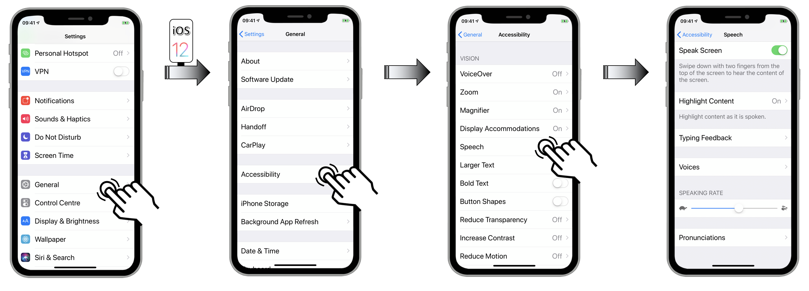
Once the menu General - Accessibility - Speech - Pronunciations is reached...

- Select the '**+**' icon to add a new phonetic element.
- Name this new element in order to quickly find it later on.
- Tap the **microphone** icon.
- Vocalize an entire sentence or a single word.
- Listen to the different system proposals.
- Validate your choice with the '**OK**' button or cancel to start over.
- Tap the back button to confirm the new created phonetic element.
- Find all the generated elements in the `Pronunciations` page.
 To get the phonetic expression inside the code, pass it through the mobile `Notes` application to be synchronized with the iCloud one from which a copy-paste becomes easy as a pie.
To get the phonetic expression inside the code, pass it through the mobile `Notes` application to be synchronized with the iCloud one from which a copy-paste becomes easy as a pie.
- [AVSpeechSynthesisVoice](https://developer.apple.com/documentation/avfoundation/avspeechsynthesisvoice)
- [AVSpeechSynthesizer](https://developer.apple.com/documentation/avfoundation/avspeechsynthesizer)
- [AVSpeechSynthesizerDelegate](https://developer.apple.com/documentation/avfoundation/avspeechsynthesizerdelegate)
- [AVSpeechUtterance](https://developer.apple.com/documentation/avfoundation/avspeechutterance)
All the speech synthesizer functionalities are introduced in a WWDC 2018 video that's perfectly summarized in the WWDC section of this site.
Switch Control
 The element selection using the item mode works fine when the user interface isn't too complicated and uses native elements.
However, this mode may not be helpful according to the rationale behind some specific use cases and then needs to be customized.
The element selection using the item mode works fine when the user interface isn't too complicated and uses native elements.
However, this mode may not be helpful according to the rationale behind some specific use cases and then needs to be customized.
 The following steps represent the customization :
- Creation of 2 groups {Test_1 + Test_2 ; Btn 5 + Btn 6} that must be selectable in the item mode.
- Within the other elements, only Btn 1 et Btn 2 must be separately accessible.
The following steps represent the customization :
- Creation of 2 groups {Test_1 + Test_2 ; Btn 5 + Btn 6} that must be selectable in the item mode.
- Within the other elements, only Btn 1 et Btn 2 must be separately accessible.
@interface ViewController2 ()
@property (weak, nonatomic) IBOutlet UIStackView * btnsParentView;
@property (weak, nonatomic) IBOutlet UIButton * btn1;
@property (weak, nonatomic) IBOutlet UIButton * btn2;
@property (weak, nonatomic) IBOutlet UIButton * btn5;
@property (weak, nonatomic) IBOutlet UIButton * btn6;
@end
@implementation ViewController2
- (void)viewDidAppear:(BOOL)animated {
[super viewDidAppear:animated];
//Creation of the first group 'testWrap' COMBINING the 'Test_1' and 'Test_2' buttons.
UIButton * testOneButton = [self.view viewWithTag:1];
UIButton * testTwoButton = [self.view viewWithTag:2];
CGRect testWrapFrame = CGRectUnion(testOneButton.frame, testTwoButton.frame);
UIAccessibilityElement * testWrap = [[UIAccessibilityElement alloc]initWithAccessibilityContainer:self.view];
testWrap.isAccessibilityElement = false;
testWrap.accessibilityFrame = testWrapFrame;
testWrap.accessibilityNavigationStyle = UIAccessibilityNavigationStyleCombined; //Property specific to Switch Control.
testWrap.accessibilityElements = @[testOneButton, testTwoButton];
//Creation of the 'secondGroup' SEPARATING the first two buttons.
CGRect secondGroupRect = CGRectUnion(_btn1.frame, _btn2.frame);
CGRect secondGroupFrame = [_btnsParentView convertRect:secondGroupRect
toView:self.view];
UIAccessibilityElement * secondGroup = [[UIAccessibilityElement alloc]initWithAccessibilityContainer:_btnsParentView];
secondGroup.isAccessibilityElement = false;
secondGroup.accessibilityFrame = secondGroupFrame;
secondGroup.accessibilityNavigationStyle = UIAccessibilityNavigationStyleSeparate;
secondGroup.accessibilityElements = @[_btn1, _btn2];
//Creation of the 'thirdGroup' COMBINING the last two buttons.
CGRect thirdGroupRect = CGRectUnion(_btn5.frame, _btn6.frame);
CGRect thirdGroupFrame = [_btnsParentView convertRect:thirdGroupRect
toView:self.view];
UIAccessibilityElement * thirdGroup = [[UIAccessibilityElement alloc]initWithAccessibilityContainer:_btnsParentView];
thirdGroup.isAccessibilityElement = false;
thirdGroup.accessibilityFrame = thirdGroupFrame;
thirdGroup.accessibilityNavigationStyle = UIAccessibilityNavigationStyleCombined;
thirdGroup.accessibilityElements = @[_btn5, _btn6];
self.view.accessibilityElements = @[testWrap,
secondGroup,
thirdGroup];
}
@end
class ViewController: UIViewController {
@IBOutlet weak var btnsParentView: UIStackView!
@IBOutlet weak var btn1: UIButton!
@IBOutlet weak var btn2: UIButton!
@IBOutlet weak var btn5: UIButton!
@IBOutlet weak var btn6: UIButton!
override func viewDidAppear(_ animated: Bool) {
super.viewDidAppear(animated)
//Creation of the first group 'testWrap' COMBINING the 'Test_1' and 'Test_2' buttons.
let testOneButton = self.view.viewWithTag(1) as? UIButton
let testTwoButton = self.view.viewWithTag(2) as? UIButton
let testWrapFrame = testOneButton?.frame.union((testTwoButton?.frame)!)
let testWrap = UIAccessibilityElement(accessibilityContainer: self.view!)
testWrap.isAccessibilityElement = false
testWrap.accessibilityFrame = testWrapFrame!
testWrap.accessibilityNavigationStyle = .combined //Property specific to Switch Control.
testWrap.accessibilityElements = [testOneButton!, testTwoButton!]
//Creation of the 'secondGroup' SEPARATING the first two buttons.
let secondGroupRect = btn1.frame.union(btn2.frame)
let secondGroupFrame = btnsParentView.convert(secondGroupRect,
to: self.view)
let secondGroup = UIAccessibilityElement(accessibilityContainer: btnsParentView!)
secondGroup.isAccessibilityElement = false
secondGroup.accessibilityFrame = secondGroupFrame
secondGroup.accessibilityNavigationStyle = .separate
secondGroup.accessibilityElements = [btn1!, btn2!]
//Creation of the 'thirdGroup' COMBINING the last two buttons.
let thirdGroupRect = btn5.frame.union(btn6.frame)
let thirdGroupFrame = btnsParentView.convert(thirdGroupRect,
to: self.view)
let thirdGroup = UIAccessibilityElement(accessibilityContainer: btnsParentView!)
thirdGroup.isAccessibilityElement = false
thirdGroup.accessibilityFrame = thirdGroupFrame
thirdGroup.accessibilityNavigationStyle = .combined
thirdGroup.accessibilityElements = [btn5!, btn6!]
self.view.accessibilityElements = [testWrap,
secondGroup,
thirdGroup]
}
}
The visual rendering is exposed hereunder :
 Once activated, the created groups allow to reach directly the elements which they contain.
Once activated, the created groups allow to reach directly the elements which they contain.
Vocalized application name
 In the end, we go from a weird to an understandable vocalized name that is defined upstream with no user modifications.
In the end, we go from a weird to an understandable vocalized name that is defined upstream with no user modifications.

WWDC : World Wide Developers Conference
This section regroups presentations at the WWDC dealing with accessibility.
Each one of them is detailed with time references to their different contents.
Most of the illustrations are parts of Apple presentations and are available at the Resources section inside the Overview sheet of each video.
The summary of each video can be reached on clicking the title or the image presentation.
2019 - Accessibility lessons
This video session encompasses four short presentations dealing with accessiblity.

2018 - Deliver an exceptional accessibility experience
This presentation is a detailed explanation of functionalities for visual impaired people leading to a very good user experience.
A demo application will highlight these functionalities purposes so as to understand the rationale behind their implementation.

2018 - AVSpeechSynthesizer
This short video introduces the essential elements to be implemented so as to make an iOS application talk.

2017 - What's New in Accessibility
Introduction of new iOS 11 accessibility features merging the user and the developer sides.

2017 - Building Apps with Dynamic Type
Dynamic Type highlights the iOS capacity to adapt the text size according to the user settings.
This video contains a theoretical approach to understand all the Dynamic Type possibilities as well as a practical part dealing with the developer side to avoid common pitfalls.

2016 - What's New in Accessibility
Introduction of new iOS, MacOS, tvOS and WatchOS accessibility features merging the user and the developer sides.

2016 - Auditing Your Apps for Accessibility
This presentation is a detailed explanation of the Accessibility Inspector Xcode tool with a programatic VoiceOver introduction at the begining.

WWDC 2016 : What's New in Accessibility
This video available on the official Apple website (session 202) points out the new accessibility features and some reminders of good practices dealing mostly with VoiceOver.
Various contents and their video timelapse are indicated hereunder :
- Functionalities
- MOTOR - Switch Control (02:29)
- MOTOR - Dwell Control (03:36)
- VISION - Display adjustments (04:15)
- VISION - Taptic time (04:53)
- VISION - Magnifier (05:17)
- HEARING - TTY (06:51)
- LEARNING - Enhanced typing feedback (07:51)
- Programing
- UIAccessibilityProtocol (14:19)
- accessibilityElements (18:00)
- accessibilityFrameInContainerSpace (19:02)
- accessibilityCustomRotors (24:19)
- tvOS header elements (31:20)
- Example : during this presentation, the hereunder solutions for VoiceOver development pitfalls are suggested thanks to a simple application that's highly recommended to be watched before going further. Once implemented, these solutions give rise to an application whose VoiceOver efficiency is shown in a live demonstration.
- Activate a
table view cell(19:58). - Put a dynamic
labelon a button (20:21). - Make
CALayerelements accessible (used to create a graph for instance) (20:45). - Understand the navigation problems on a
mapviewwith VoiceOver (23:33). - Searching elements in a
table view(25:37) and in amapview(27:45) thanks to therotoritem.
- Activate a
Thereafter, the selection of a title will give rise to the video playback directly at the proper moment.
MOTOR - Switch Control (02:29)
After a brief reminder about this iOS functionality, a specific focus is invoked in this new tvOS feature. 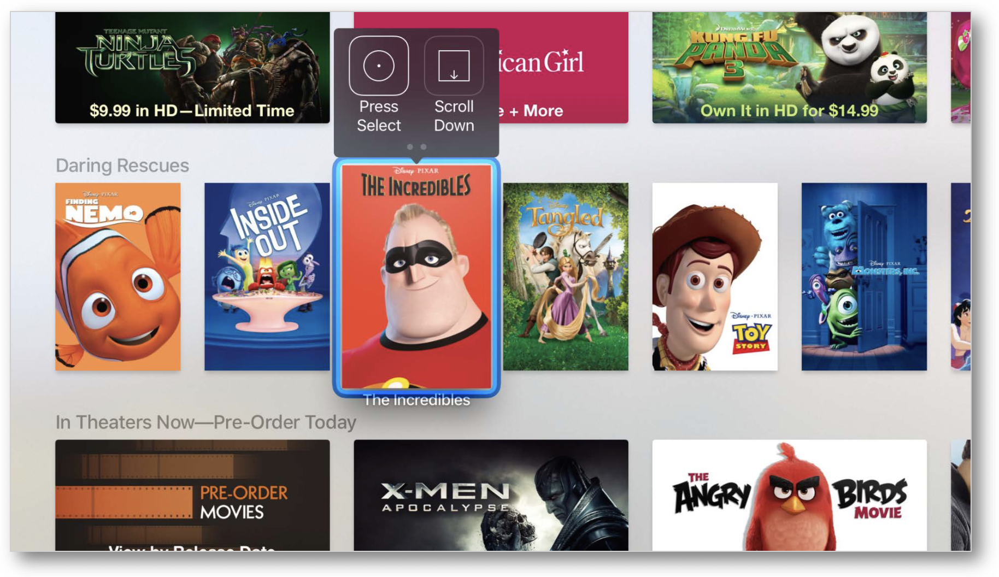
MOTOR - Dwell Control (03:36)
Connected remote devices allow a user to control their mouse.
When the mouse dwells on a location, the Dwell Control feature displays a timer at the expiration of which an action is triggered (new MacOS feature).

VISION - Display adjustments (04:15)
People who are light sensitive or have color issues already use the MacOS and iOS supported features (inverted colors...) that are now available for tvOS.
VISION - Taptic time (04:53)
Introduced in WatchOS 3, this new VoiceOver feature includes a series of distinct taps to help people tell time silently and discretely.
VISION - Magnifier (05:17)
This new iOS 10 feature allows the device's camera to be used in order to magnify the user environment with many possible functionalities (steadiness, zoom, color filters...) whose efficiency is shown in a live demonstration.
HEARING - TTY (06:51)
The typewriter technology that allows to hold text conversations over standard telephone calls for someone with hearing loss is now available for iOS. This new iOS 10 feature is a software implementation that prevents from adding any additional TTY hardware while using this technology only with an iOS device.
LEARNING - Enhanced typing feedback (07:51)
Besides the improvements for Speech Selection and Speech Screen in the Accessibility - Speech part, an audio typing feedback has also been implemented.
This new iOS 10 feature helps people with dyslexia to catch and prevent mistakes in their writings, highlighted by a live demonstration.
UIAccessibilityProtocol (14:19)
Reminder on the UIAccessibility informal protocol fundamentals that will be used during the presentation.

accessibilityElements (18:00)
The implementation and the purpose of this element are explained and introduced inside the demo application.

accessibilityFrameInContainerSpace (19:02)
This new iOS 10 feature allows the automatic handling of the accessible element coordinates inside its container.

accessibilityCustomRotors (24:19)
Customed elements can be added to a native rotor thanks to this new iOS 10 feature.
 The programming implementation of this feature is detailed in the development part.
The programming implementation of this feature is detailed in the development part.
tvOS header elements (31:20)
This last section deals with reminders of header elements implementation and purpose inside a VoiceOVer navigation with tvOS.


WWDC 2016 : Auditing Your Apps for Accessibility
This video available on the official Apple website (session 407) aims at defining and using the Accessibility Inspector tool of Xcode, based on good practice implementation.
 Various contents and their video timelapse are indicated hereunder :
Various contents and their video timelapse are indicated hereunder :
- Accessibility Inspector (09:38)
- Audit (11:21)
- Inspection (20:30)
- Settings (28:33)
Thereafter, the selection of a title will give rise to the video playback on the Apple website directly at the proper moment.
Accessibility Inspector (09:38)
Overview of the tool pointing out the themes to be developed : audit, inspection and settings.

Audit (11:21)
This part contains a demo (12:22) that highlights the way to find out a solution for the problem detected by the tool (14:24) while providing a bug report (17:07).
 A complementary manual audit is also mandatory to avoid bypassing some kind of hidden problems (18:55).
A complementary manual audit is also mandatory to avoid bypassing some kind of hidden problems (18:55).
Inspection (20:30)
This feature explanation is build on an example (21:58) that points out possible kinds of problems in an app like :
- Inappropriate sequencing of elements during the navigation. (23:11)
- Abstruse description of an element. (23:34)
- Improper action of an element. (24:02)
The presentation of the view hierarchy of this feature (24:40) comes along with an important point dealing with CALayer elements that aren't taken into account by VoiceOver.

Settings (28:33)
Last but not least, this feature (highlighted thanks to a demo - 30:25) avoids switching back and forth between changing some accessibility settings and verifying the result on the app.

WWDC 2017 : What's New in Accessibility
This video available on the official Apple website (session 215) points out the main iOS11 accessibility features.
 Various contents and their video timelapse are indicated hereunder :
Various contents and their video timelapse are indicated hereunder :
- Text detection in image (07:07)
- Improved photo description (08:01)
- Type to SIRI (11:37)
- Accessibility Inspector (15:35)
- UIAccessibilityProtocol (21:14)
- Attributed Accessibility Properties (26:07)
- Accessibility Container Type (27:20)
- Custom actions (35:43)
- Default activation (37:38)
- Adjustable (38:22)
- Pass through (39:40)
- Custom scrolling (41:02)
- Drag & Drop (42:54)
During this presentation, the following solutions for accessibility development pitfalls are suggested thanks to a simple application (take a look at it) :
- How to define an (in)accessible element ? (31:10)
- How to fill the
labelandvalueproperties? (29:59) - How to gather several elements into a single one ? (31:50)
Thereafter, the selection of a title will give rise to the video playback directly at the proper moment.
Text detection in image (07:07)
It's now possible to find out if some text is incrusted inside an image.
 This basic detection that can be done thanks to a simple tap with 3 fingers will vocalize the text to someone who
can't initially read it.
This basic detection that can be done thanks to a simple tap with 3 fingers will vocalize the text to someone who
can't initially read it.
Improved photo description (08:01)
The vocalization of a photo description is a new Voice Over feature that is fired thanks to a simple tap with 3 fingers.
 A very simple detection of the context, the faces and their expressions is then vocalized to a visual impaired user.
A very simple detection of the context, the faces and their expressions is then vocalized to a visual impaired user.
Type to SIRI (11:37)
Very usefull feature for people who can't use SIRI vocally or who are willing to make some requests in a discreet way.
To enable this feature, go to Accessibility in the Settings to make the activation effective.

Accessibility Inspector (15:35)
In this part, the Xcode accessibility inspector instrument is used to show basics about an accessibility app audit. Examples are provided without explaining in depth the tool itself to which a former Apple session (2016 - 407) is dedicated.
UIAccessibilityProtocol (21:14)
Reminder on the UIAccessibility informal protocol fundamentals that will be used during the presentation.

Attributed Accessibility Properties (26:07)
NSAttributedString can be used in order to customize the way to vocalize the label, value and hint accessibility properties.
 Among the provided examples, one deals with the vocalization of a specific element in a foreign language.
Among the provided examples, one deals with the vocalization of a specific element in a foreign language.
 All usable keys can be found on the Apple official documentation.
All usable keys can be found on the Apple official documentation.
Accessibility Container Type (27:20)
A new accessibility typed container is available in iOS 11.
 The notion of container already existed in iOS but VoiceOver couldn't know the kind of container until now.
The notion of container already existed in iOS but VoiceOver couldn't know the kind of container until now.
Custom actions (35:43)
Many different actions may be attributed to an element thanks to a bunch of accessibilityCustomAction.
 As soon as this element is selected, a vertical swipe with one finger will be proposing the choices of possible actions.
The programming implementation of this feature is detailed in the development part.
As soon as this element is selected, a vertical swipe with one finger will be proposing the choices of possible actions.
The programming implementation of this feature is detailed in the development part.
Default activation (37:38)
In order to limit or make them easier all the user VoiceOver handlings, it's possible to trigger appropriate actions as soon as an element is activated thanks to a double tap.

Adjustable (38:22)
When you want to change the value provided by elements such as slider or picker in a very fluid way, two methods have to be implemented :
 As soon as the view is selected, a vertical swipe with one finger increases (up) or shrinks (down) the value.
The programming implementation of this feature is detailed in the development part.
As soon as the view is selected, a vertical swipe with one finger increases (up) or shrinks (down) the value.
The programming implementation of this feature is detailed in the development part.
Pass through (39:40)
If a VoiceOver user double taps with one finger, holds it and passes it through the panning gesture, a finer adjustment of a slider can be obtained as below :
 The accessibilityActivationPoint attribute will allow a fine location in the panning gesture :
The accessibilityActivationPoint attribute will allow a fine location in the panning gesture :

Custom scrolling (41:02)
The VoiceOver basic scrolling is based on a ** 3 fingers swipe** but it can be customized thanks to the accessibilityScroll method belonging to the UIAccessibilityAction protocol.

Drag & Drop (42:54)
This new feature isn't explained in depth but only its 2 overriding principles are presented : the drag sources and the drop points.
 Their use is briefly described in an example at the end of the video.
Their use is briefly described in an example at the end of the video.
WWDC 2017 : Building Apps with Dynamic Type
This video available on the official Apple website (session 245) aims at defining what Dynamic Type is, based on good practice implementation.
 Various contents and their video timelapse are indicated hereunder :
Various contents and their video timelapse are indicated hereunder :
- Text styles (06:06)
- Custom fonts (08:17)
- Web views (09:25)
- Wrap to multiple lines (10:14)
- Auto layout system spacing constraints (11:31)
- Scaled values (12:56)
- Side-by-side text (13:36)
- PreferredContentSizeCategory (15:23)
- Table view cells (16:38)
- Images (20:13)
- Example (24:32)
Thereafter, the selection of a title will give rise to the video playback on the Apple website directly at the proper moment.
Text styles (06:06)
All the text styles can have the 5 accessibility sizes in iOS 11 whereas it was only the case for the body text style before.
In the Xcode Interface Builder, just indicate the style in the Attribute Inspector part and tick Dynamic Type to adjust the text size to the device settings.
 Get the exact same result with the following code :
Get the exact same result with the following code :

Custom fonts (08:17)
The new iOS 11 class UIFontMetrics allows a custom font to be automatically adjusted.

Web views (09:25)
When a web view is used, the CSS may contain information about the text style to be displayed :

Wrap to multiple lines (10:14)
When a label may be troncatured after adjustment, it's recommended to write 0 number of lines in the Attribute Inspector part of the Interface Builder that will be understood as no limit.

Auto layout system spacing constraints (11:31)
Using a baseline constraint between two labels, the good practice for Dynamic Type is not to put a constant value so as not to end up in the following situation :
 The baseline contraint
The baseline contraint Standard Value in Interface Builder or a programmatic solution using constraintEqualToSystemSpacingBelow (iOS 11 feature) will lead to an overcome situation.

Scaled values (12:56)
The new scaledValue method provides the height of a graphical element containing text whose size may automacally grow or shrink.
 This might be useful for a button whose background content must be updated after a font size modification for instance.
This might be useful for a button whose background content must be updated after a font size modification for instance.
Side-by-side text (13:36)
Vertically nearby labeled elements may become unreadable or may worsen the graphical interface at a specific text size.
In that case, it's highly recommended to update the alignment from horizontal to vertical once this size threshold is reached.

PreferredContentSizeCategory (15:23)
2 specific groups gather all the possible text sizes :
- The first one contains the 7 basic thresholds from
extraSmalltoextraExtraExtraLarge. - The second one is accessibility dedicated and must be activated to be taken into account. It includes the last 5 thresholds from
accessibilityMediumtoaccessibilityExtraExtraExtraLarge.
These values can be obtained from the view traitCollection or from the application preferredContentSizeCategory method.
 It's also possible to set conditions dealing with text sizing in order to rearrange graphical elements when necessary.
It's also possible to set conditions dealing with text sizing in order to rearrange graphical elements when necessary.

Table view cells (16:38)
Standard table view cells content is automatically adjusted thanks to the cell-sizing.
 Constraints must be adapted in case of custom cells in order to obtain the desired rendering and let the cell-sizing work.
Constraints must be adapted in case of custom cells in order to obtain the desired rendering and let the cell-sizing work.

Images (20:13)
Dynamic Type allows image size adjustment for both views and tab bars as well.
All the detailed explanations for this implementation can be found in the development part.
Example (24:32)
During this presentation, some solutions for Dynamic Type pitfalls are suggested thanks to a simple application (take a look at it before reading what's next) :
- Why doesn't my implemented
Dynamic Typework ? (26:19) (hint =adjustsFontForContentSizeCategory(code) orAutomatically Adjusts Font(Attribute Inspector) +scaledFontif custom font is used) - How can I change items position to adapt text enlargement ?
(28:01) (hint = set up constraints for a vertical alignment + define these new constraints activation thanks to
preferredContentSizeCategory+traitCollectionDidChangeto be notified of a text size changing) - How to make my table view cells size to fit content ?
(31:03) (hint =
UITableViewAutomaticDimension+estimatedRowHeight) - Why is there unscaled image size with the text enlargement ?
(32:11) (hint =
adjustsImageSizeForAccessibilityContentSizeCategory) - Why have I unsmooth images when enlargement is set up ?
(33:07) (hint =
Preserve Vector Datain the Attribute Inspector of the .xcassets) - How can I check enlargement with accessibility inspector ? (34:56)
WWDC 2018 : Deliver an exceptional accessibility experience
This video available on the official Apple website (session 230) aims at highlighting the essential elements that will provide an optimal user experience for visual impaired people.
Various contents and their video timelapse are indicated hereunder:
- Transparency and blurring (03:07)
- Contrast (04:38)
- Sizing (07:04)
- Motion (08:48)
- UIAccessibilityElement (21:03)
- Adjustable values (21:44)
- Custom actions (23:49)
- Accessibility modal view (25:02)
- Notifications (25:13)
- Demo
- How to render a carousel perfectly VoiceOver understandable ? (25:53)
- How to synchronize the selected carousel element with the displayed data ? (30:53)
- How to gather actions with an elements regroupment ? (33:05)
- How to avoid selections behind a 'Modal View' ? (34:32)
- Final rendering with an optimized VoiceOver implementation. (35:38)
The latest content points out an amazing application for :
- The developers interested in finding out detailed explanations about many VoiceOver implementations.
- Those who are willing to figure out how a mobile application should interact with VoiceOver to obtain an optimal user experience (see 'Final rendering with an optimized VoiceOver implementation').
Thereafter, the selection of a title will give rise to the video playback on the Apple website directly at the proper moment.
Transparency and blurring (03:07)
Since iOS 8, classes such as UIBlurEffect and UIVisualEffectView perfectly handle the blurring effect of an image.
However, this could give rise to sighting difficulties for some people having visual impairments.
In this case, there's a possibility for the user to drastically weaken these effects by activating the appropriate accessibility option in his settings.
 The result is a darker background that may become completely uniform under certain circumstances.
The result is a darker background that may become completely uniform under certain circumstances.
 The
The isReduceTransparencyEnabled property value is available in the programing language as well.

Contrast (04:38)
The contrast between the foreground and the background colors is very important and depends a lot on the font type properties that are detailed in the iOS guide section of this site.
To improve the reading experience, it's natively possible to increase the colors contrast by activating the appropriate accessibility option in the settings.
 The
The isDarkerSystemColorsEnabled property enables the developed application to be informed of its value.

Sizing (07:04)
The individual presented elements about the Dynamic Type are widely explained in the iOS developement section and refer to another presentation detailed in the WWDC part of this site.
Display a bold font type may improve the visual rendering enough without disproportionately increase the font size.
Once more, this accessibility option can be activated in the mobile settings.
 The
The isBoldTextEnabled property enables the developed application to be informed of its value.

Motion (08:48)
Any animations may give rise to problems of balance even of nausea to certain people.
The user settings allow to strongly decrease the effects of all kind of native animations by activating the appropriate accessibility option.
 The
The isReduceMotionEnabled property enables the developed application to be adapted to the user preference.

UIAccessibilityElement (21:03)
The implementation and the purpose of this element are explained and introduced inside the demo application.
Adjustable values (21:44)
This functionality that is implemented thanks to a specific trait is specifically introduced in this presentation so as to ease the element selection inside a CollectionView.
 A different outline of this functionality is developed in another presentation detailed in the WWDC part of this site.
A different outline of this functionality is developed in another presentation detailed in the WWDC part of this site.
Custom actions (23:49)
On a single selection, it's possible to gather many actions that are initially trigerred by distinct graphic elements.
 All the explanations are also exposed in another presentation detailed in the WWDC part of this site.
All the explanations are also exposed in another presentation detailed in the WWDC part of this site.
Accessibility modal view (25:02)
When a view is only presented as being at the top of the view hierarchy, VoiceOver doesn't know natively that the background elements mustn't be analyzed.
The solution deals with the accessibilityViewIsModal value so as to avoid VoiceOVer to check other elements than those in the foreground.

Notifications (25:13)
Reminder to notify the users about modifications on the screen.
 More detailed explanations are available in the developer part of this site.
More detailed explanations are available in the developer part of this site.
Demo
During this presentation, some solutions for VoiceOver implementation pitfalls are suggested thanks to a simple application. First of all, the application introduction and the non optimized VoiceOver rendering must be watched in order to understand the rationale behind the proposed solutions.
How to render a carousel perfectly VoiceOver understandable ? (25:53)
- Create an accessible element to define the carousel. (26:11)
- Implementations of the
labelandvalueproperties. (26:43) - Definition of
adjustableTraitwith itsincrementanddecrementmethods. (26:58) - Creation of a scrolling function. (27:14)
- Add the carousel element as an accessible element. (28:38)
- Updating of the displayed data in conjunction with the user selection. (29:51)
- Screen updating notification when a carousel element selection occurs. (30:14)
How to synchronize the selected carousel element with the displayed data ? (30:53)
- Gather elements to significatively improve the selection. (31:14)
- Synchronization of the regrouped elements with the selected carousel element. (32:46)
How to gather actions with an elements regroupment ? (33:05)
How to avoid selections behind a 'Modal View' ?
Final rendering with an optimized VoiceOver implementation. (35:38)
The presented code of this video and many explanations of its implementation are available on the [Apple developer site](https://developer.apple.com/documentation/uikit/accessibility/delivering_an_exceptional_accessibility_experience).WWDC 2018 : Making iOS talk with AVSpeechSynthesizer
This video available on the official Apple website (session 236) aims at highlighting the essential elements to be implemented in order to use a synthesized speech thanks to AVSpeechSynthesizer.
Various contents and their video timelapse are indicated hereunder:
- Uses (00:48)
- Basics (02:03)
- AVSpeechSynthesizerDelegate (03:20)
- Demo (04:11)
- Choosing the right voice (04:31)
- Speech rate (05:32)
- Pitch and volume (06:15)
- Phonetics (06:54)
Thereafter, the selection of a title will give rise to the video playback on the Apple website directly at the proper moment.
Uses (00:48)
The wide range of possible use cases offered by this feature are introduced in this section.
Basics (02:03)
Using a synthesized speech first implies a AVSpeechSynthesizer instance creation that must be retained until the speech is done.
 Then create an utterance that must be provided to the previous instance.
Then create an utterance that must be provided to the previous instance.
 In this case, an audio session is automatically activated and may be used together with the speech synthesis.
In this case, an audio session is automatically activated and may be used together with the speech synthesis.
 This session must be explicitly deactivated after speech is done.
This session must be explicitly deactivated after speech is done.
AVSpeechSynthesizerDelegate (03:20)
This protocol encompasses many optional methods that handle speech synthesis events :

Demo (04:11)
Simple example of a speech synthesis highlighted thanks to the AVSpeechSynthesizerDelegate protocol methods.

Choosing the right voice (04:31)
The default voice is the built-in voice of the device supported language.
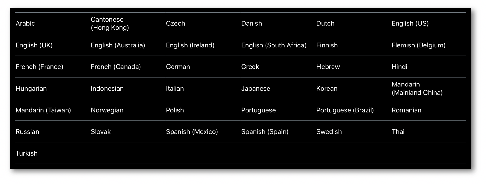
However, it's still possible to select another voice specifying the desired language or using an identifier inside an array of speech voices that have been downloaded.

Speech rate (05:32)
The speech rate can be changed thanks to the rate property going from 0 to 1. 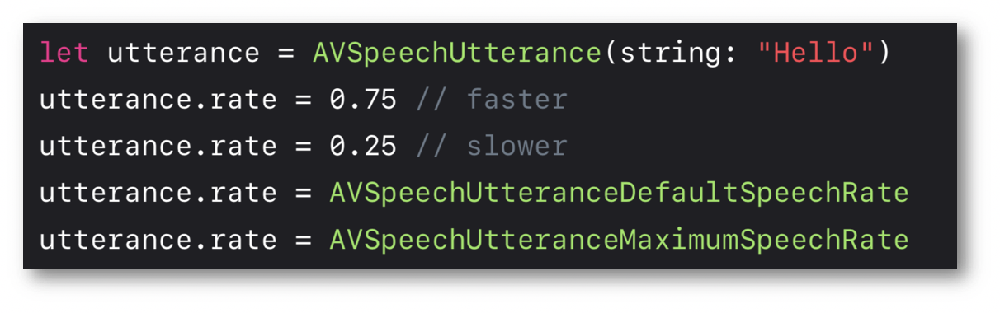
Pitch and volume (06:15)
The pitch tone and the speech volume can be easily modified without affecting the system volume.

Phonetics (06:54)
The IPA can be used with Attributed Strings in order to customize how specialized names, words or sentences are pronounced.
 Attributed strings may also be used to specify a different language for a part of a sentence for instance.
Attributed strings may also be used to specify a different language for a part of a sentence for instance.
WWDC 2019 : Accessibility Lessons
This video encompasses four short presentations all available on the **official Apple website**:
- Visual Design Accessibility
- Accessibility Inspector
- Writing Great Accessibility Labels
- Accessibility Custom Actions
Thereafter, according to the presentation configuration, the selection of a title or a timelapse will give rise to the video playback on the Apple website directly at the proper moment.
Visual Design Accessibility
This video available on the official Apple website (session 244) highlights some points to provide a better accessible application visually speaking.
 Various contents are indicated hereunder:
Various contents are indicated hereunder:
- DYNAMIC TYPE
- The Four Principles
- Text Styles
- Xcode ⟹ iOS 13 new feature
- REDUCE MOTION
- The Basics
- Autoplaying Video ⟹ iOS 13 new feature
- Screen Transitions ⟹ iOS 13 new feature
- COLOR
- The Basics
- Differentiate Without Color ⟹ iOS 13 new feature
DYNAMIC TYPE
- If the text can be dynamic, it must be implemented to reach this purpose.
- Use as much of the screen width as possible.
- Don't truncate text as it grows if it's not the case in the default user interface.
- Scale the glyphs next to text to make the interface look balanced.

REDUCE MOTION
 A detailed explanation of the accessibility options states and events is available in the developers guide section.
A detailed explanation of the accessibility options states and events is available in the developers guide section.
 If this option is deactivated, the video control must be regained only under the user interaction.
If this option is deactivated, the video control must be regained only under the user interaction.
 Once activated, the `Prefer Cross-Fade Transitions` option is automatically taken into account by all the UIKit standard elements *(navigation, modal views...)*.
Once activated, the `Prefer Cross-Fade Transitions` option is automatically taken into account by all the UIKit standard elements *(navigation, modal views...)*.
COLOR

 Admittedly, it's highly recommended never to transmit information by colors but this situation may be critical for some use cases that must adapt their configuration accordingly *(video games for instance)*.
Admittedly, it's highly recommended never to transmit information by colors but this situation may be critical for some use cases that must adapt their configuration accordingly *(video games for instance)*.

Accessibility Inspector
This video available on the official Apple website (session 257) aims at introducing the Accessibility Inspector tool and some Xcode 11 new features that will solve problems exposed inside a demo application.
 Various contents and their video timelapse are indicated hereunder:
Various contents and their video timelapse are indicated hereunder:
- Introduction (00:51)
- Audit (02:26)
- Inspection (03:40) including a Xcode 11 new feature
- CATextLayer (05:26)
- Color Contrast (06:26) including a Xcode 11 new feature
- Conclusion (08:24)
Introduction (00:51)
 The demo application is introduced in depth so as to have a better understanding of some further issues while highlighting:
The demo application is introduced in depth so as to have a better understanding of some further issues while highlighting:
Audit (02:26)
The purpose of this functionality is to provide a list of potential accessibility issues.

Inspection (03:40)
Introduction of a Xcode 11 new feature to vocalize and select elements on the simulator (04:11) after showing the way to get the complete description of a graphic element in conjunction with its selection. 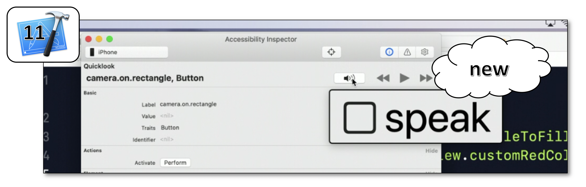
CATextLayer (05:26)
This example emphasizes the non automatic accessibility handling for this kind of element that must be programmatically implemented to behave like any other accessibility element.
Color Contrast (06:26)
Besides the font size, it's also very important to be above a contrast ratio to enable sight-impaired people to perfectly understand the whole screen content.
Once the color contrast issue is detected, a solution is brought about by the Xcode 11 new feature: Color Contrast Calculator.

Conclusion (08:24)
All the previous tools that have been used during this session are highlighted in order to visualize the final rendering and to be sure that the suggested solutions are effective.
Writing Great Accessibility Labels
This video available on the official Apple website (session 254) is entirely presented by a blind person who explains the importance and the way of writing labels to be perfectly understood whatever the context.
Many examples are provided to show how the visual elements are exposed to a VoiceOver user when its properties are well fulfilled... or not.
 After a quick introduction regarding the expectations of a blind user about a mobile application at first launch (00:13), the label definition is introduced in details (01:53) followed by clear explanations of different contexts a button example belongs to in order to adapt its label accordingly (02:41).
Finally, the following best practices are presented with illustrative examples: (04:24)
After a quick introduction regarding the expectations of a blind user about a mobile application at first launch (00:13), the label definition is introduced in details (01:53) followed by clear explanations of different contexts a button example belongs to in order to adapt its label accordingly (02:41).
Finally, the following best practices are presented with illustrative examples: (04:24)
- Always add appropriate labels to the accessibility elements (04:33).
- Don't include the element type in the label (05:22).
- Update labels when the user interface changes (05:46).
- Provide a context clarification when necessary (06:07).
- Avoid redundancy when things are clear according to the context (06:42).
- Add labels to the meaningful animations (spinner...) (07:08).
- Avoid verbose labels when not necessary (07:24) but don't hesitate to use it when appropriate (07:48).
Accessibility Custom Actions
This video available on the official Apple website (session 250) highlights the custom actions for the screen reader and the Switch Control feature thanks to a demo application that presents the explained concepts.
 Various contents and their video timelapse are indicated hereunder:
Various contents and their video timelapse are indicated hereunder:
- Introduction (00:12)
- Custom Actions: VoiceOver (03:10)
- Custom Actions: Switch Control (04:28)
- Implementation (07:59) ⟹ iOS 13 new syntax
Introduction (00:12)
Quick introduction of VoiceOver with a problem due to an inadequate implementation highlighted by the demo application that's used all along the session.
Custom Actions
 Implementing custom actions in this context leads to a **drastic decrease of focus/activations actions** to be carried out by the user so as to reach the same result.
Implementing custom actions in this context leads to a **drastic decrease of focus/activations actions** to be carried out by the user so as to reach the same result.
Implementation (07:59)
Since iOS 8, the custom actions implementation relies on an Objective C syntax that now fits a Swift form by introducing a closure in iOS 13.

Guide for developers
The developer guide is intended to help developers with the major Android / iOS accessibility options. Through different categories, this guide explains how to use the accessibility attributes / methods and provides links to the official documentation of Google / Apple.
Two versions are available:
- Android version is about application development for the Google platform: Android.
- iOS version is about application development for the Apple platform: iOS.
The iOS WWDC section is dedicated to some World Wide Developers Conference presentations.
Orange mobile accessibility guidelines
* Accessibility: a need for some, a benefit for all! *
Mobile accessibility definition
** It is an application usable by everyone **
- People with no disabilities.
- Elderly people.
- People with disabilities (temporary or permanent).
** and in all situations **
- With any kind of material: mobile browser, Android, iOS, tablet.
- In an unfavourable environment: poor luminosity, touchpad while moving,...
- With specific software that compensate the handicap.
Site organization
Android
1. Design criteria
List of different accessibility criteria for obtaining an accessible mobile app. A good way to be aware of the main criteria and commit progressively in accessibility.
2. Developers guide
Section for developers. Everything you need to know to code accessible on mobile.
3. Talkback
Guide to using the native screen reader. Details all the necessary gestures for a Talkback complete mastery.
4. Tests
Includes tests to be done so as to be sure that the Android recommendations are taken into account before the prod launching.
iOS
1. Design criteria
List of different accessibility criteria for obtaining an accessible mobile app. A good way to be aware of the main criteria and commit progressively in accessibility.
2. Developers guide
Section for developers. Everything you need to know to code accessible on mobile.
3. VoiceOver
Guide to using the native screen reader. Details all the necessary gestures for a VoiceOver complete mastery.
4. WWDC
Contains many detailed World Wide Developers Conference videos that represent a significant milestone to mobile accessibility.
5. Tests
Includes tests to be done so as to be sure that the iOS recommendations are taken into account before the prod launching.
mDAN
mDAN application overview, the digital accessibility demonstrator for mobile.
Useful links
Some useful links that will complete the explanation of this website.
Useful links
Going further
You will find more detailed information on accessibility for iOS and Android on the github repository of Disic (Interministerial Directorate for Information and Communication Systems):
- Audit guide for mobile application
- Design guide for accessible mobile applications
- Guide for accessible hybrid mobile applications with Ionic and OnsenUI
For Android
Google and Android accessibility API:
The AccessibilityScanner application allows you to test quickly and simply the accessibility of your apps:
For iOS
Apple accessibility API:
- Official accessibility API documentation
- iOS accessibility features
- Apple official accessibility documentation
- VoiceOver user guide
mDAN
mDAN, what is it?
mDAN is a mobile application (for Android and iOS) that showcases accessibility on a mobile device. Its objectives are:
- accessibility presentation,
- mobile accessibility criteria,
- guide for Developers,
- screen reader user guide (Talkback or VoiceOver),
- presentation of accessibility,
- contact, etc.
mDAN, yes, but for whom?
mDAN targets everybody interested or involved in accessibility:
- Testers: with the accessibility criteria and the screen reader user guide;
- Developers: with the development guide;
- Managers, designers, etc.: for accessibility awareness.
I want mDAN!
Source code is available on github
mDAN will be available soon on the Play Store and the App Store.
You can already download the Android version.
Android accessibility
... to be completed.
iOS accessibility
Many accessibility concepts must be perfectly understood in order to bring the best user experience. All these basic and advanced notions are illustrated and explained within the following sections :
Design criteria
This section introduces the different accessibility criteria for getting an accessible iOS application.
Developers guide
This guide aims at helping the iOS developers to understand and implement the functionalities that enable a perfect accessibility through their apps thanks to illustrations and code snippets.
VoiceOver
The best way to provide a good VoiceOver user experience is to get a perfect mastery of this screen reader gestures. These gestures are all illustrated and well explained in this section.
WWDC
This section gathers presentations at the World Wide Developers Conference dealing with accessibility.
Each one of them is detailed with time references to their different contents.
Tests
This part contains testings that follow the iOS recommendations.
TalkBack and VoiceOver guide
Through this section, we list the common gestures for Android and iOS screen readers. These assistive tools have a lot of functionalities but require a minimum knowledge to be used effectively.
Two versions are available:
- TalkBack built-in screen reader for Android.
- VoiceOver built-in screen reader for iOS.
iPhoneX basic gestures
This page describes the iPhoneX common gestures thanks to textual explanations and illustrations so as to easily understand the movements to be done. Thereafter, illustrations with a home button device are also included to see possible differences.
- Go to Home Screen.
- Unlock the screen.
- Turn on the locked screen.
- Open Control Center.
- Get Multitask Pane.
- Select an opened application.
- Reachability.
- Ask Siri.
- Use Apple Pay.
- Take a screenshot.
- Power off the device.
Gesture : flick up with 1 finger from the bottom edge of the screen.
Unlock the screen
Gesture : flick up with 1 finger from the bottom edge of the locked screen. Result : screen automatic unlock with the activated faceID functionality. The gesture is exactly the same as previously explained but deals with a locked screen in our case.
Gesture : simple-tap with 1 finger anywhere on the screen.
Gesture : flick down with 1 finger from the upper right corner of the screen.
Gesture : swipe up and hold with 1 finger from the bottom edge of the screen until seeing a list of opened applications. This swipe may also end up to the right side of the screen to obtain the same result. Result : display of all opened applications. 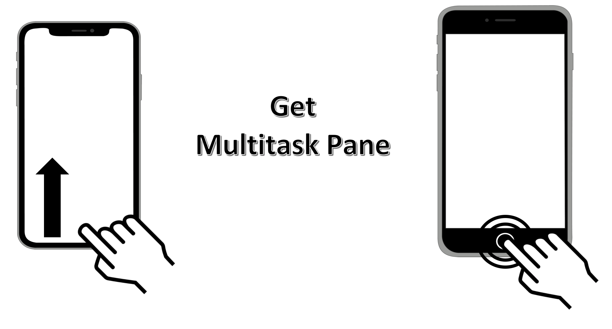
Gesture : swipe right or left with 1 finger in the lowest part of the screen. 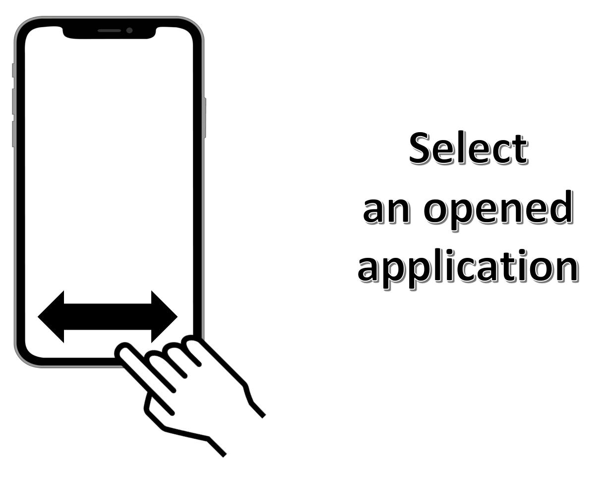
Gesture : flick down with 1 finger from the lowest part of the screen. A flick up will rise the top of the minimized page up to the top of the screen.
Gesture : press and hold the power side button until the Siri screen appears (1 or 2 seconds max). 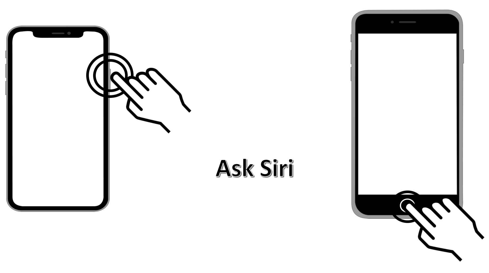
Gesture : double-click the power side button until the Apple Pay screen appears.
Gesture : rapid click on the power side and the volume up buttons at the same time.
The screenshot is recorded in the Photos application of the device.
Gesture : press and hold the power side and the volume up buttons at the same time. Result : updated screen display with a choice for powering off the device. 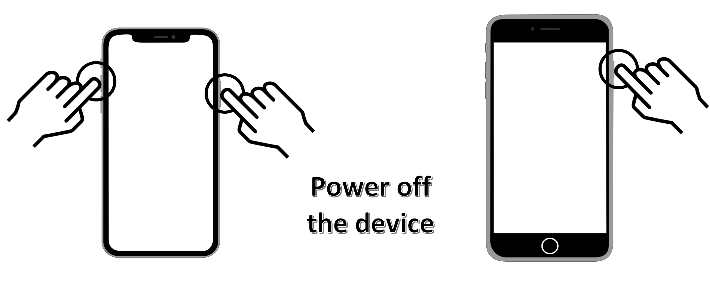
Talkback user guide
TalkBack is a built-in screen reader for Android that reads aloud the items that appear on the device screen. It is free and it vocalizes all visible elements in the page specially for blind or partially sighted, dyslexic or illiterate users. A tool like TalkBack is called either screen reader or speech synthesizer, even if a screen reader is actually a software associated with voice synthesis.
When TalkBack is on, the standard gestures behave differently. Furthermore, additional gestures let you move the focus on the screen and control the selected items. TalkBack has gestures with one, two and three fingers to select and to go through elements. We describe here the basic gestures commonly used. Note: TalkBack is considered as accessible since the JellyBean release (4.1) because you can navigate sequentially.
First of all, update TalkBack here: PlayStore Link
Common gestures
-

Drag one finger
Explore your screen and hear audible feedback for what is being touched.
-

Double-tap anywhere on the screen
Opens or activates the item that you last touched (vocalized).
-


Swipe up or down using two fingers
Scroll within lists or pages if selected. Equivalent to a vertical swipe.
-


Swipe left or right using two fingers
Change pages and screens when possible. Equivalent to a horizontal swipe.
-

Swipe right using one finger
Move the focus to the next item.
-
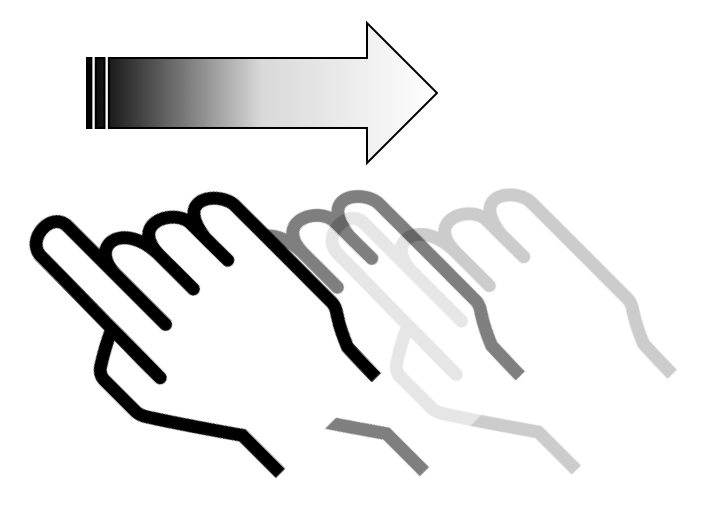
Swipe left using one finger.
Move the focus to the previous item.
-


Swipe up or down using one finger
Cycle through navigation mode: “pages”, “by default (elements)”, “characters”, “words”, “lines” et “paragraphs”.
These images are licensed under the Creative Commons Share Alike 2.0 license. Photo credit: openexhibits
For more information about TalkBack and a detailed description of its features, please read the Google’s official documentation on TalkBack.
VoiceOver user guide
VoiceOver is a built-in screen reader that reads aloud the items that appear on the device screen. It vocalizes all visible elements in the page specially for blind or impaired, dyslexic or illiterate users.
VoiceOver can be switched on thanks to the Settings - General - Accessibility - VoiceOver device menu.
 When VoiceOver is on, the standard gestures behave differently and additional gestures let you move the focus on the screen and control the selected items.
When VoiceOver is on, the standard gestures behave differently and additional gestures let you move the focus on the screen and control the selected items.
It's better but not mandatory to activate the vibration feature in the accessibility settings in order to feel the trigger of some actions.
 A sound may be heard in case of a disactivated vibration feature but VoiceOver might cover it.
A sound may be heard in case of a disactivated vibration feature but VoiceOver might cover it.
Two gestures are important to be well understood so as to perfectly harness the provided details thereafter :
 The flick consists in raising the finger of the screen at the end of the mopvement while continuing it in the air.
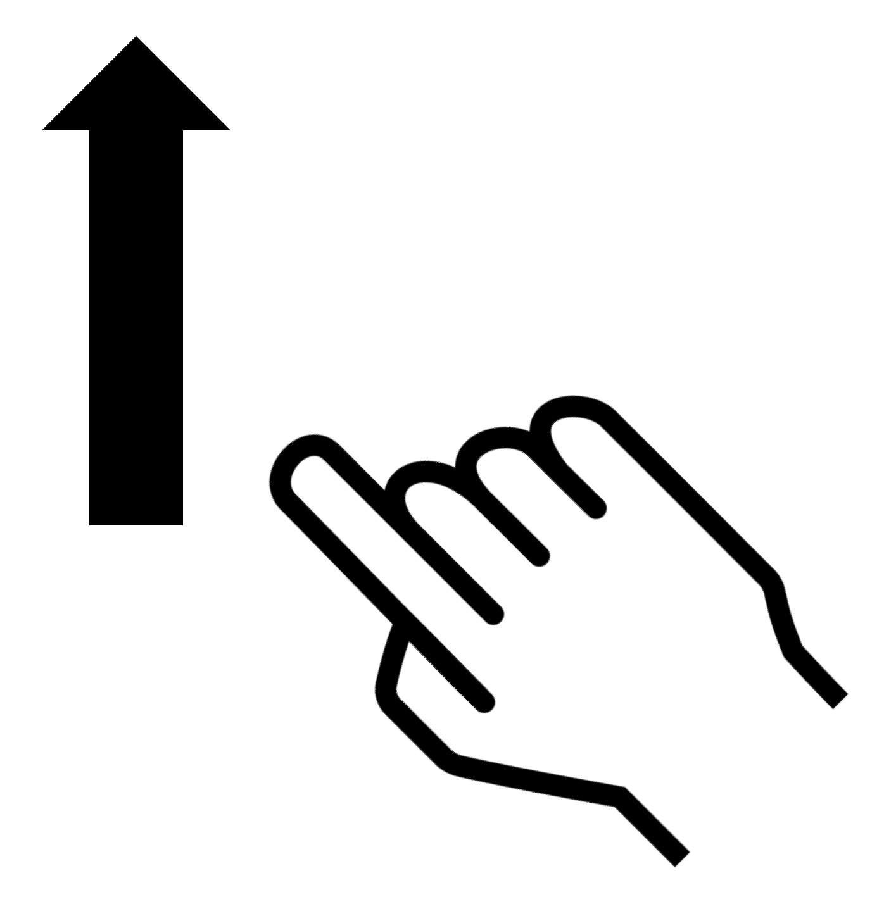
The swipe consists in doing the gesture while keeping the finger on the screen.
The flick consists in raising the finger of the screen at the end of the mopvement while continuing it in the air.
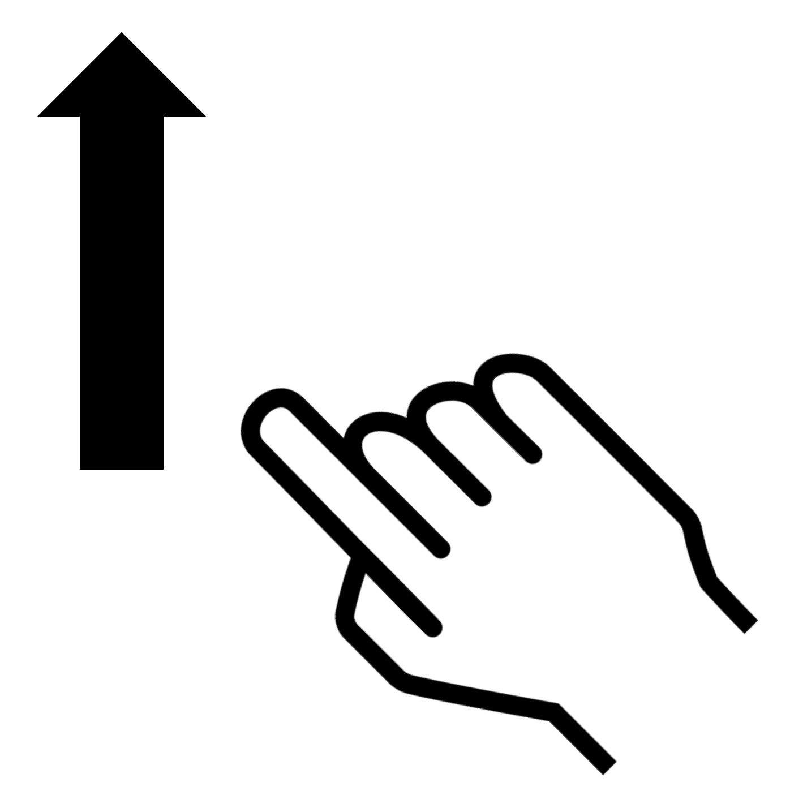
The swipe consists in doing the gesture while keeping the finger on the screen.
First, VoiceOver common gestures will be introduced to be followed by iPhoneX dedicated gestures. The last part will deal with unusual but useful features for an advanced user.
Common gestures
-
Drag one finger
Explore your screen and hear audible feedback for what is being touched.
-
Double-tap anywhere on the screen
Opens or activates the item that you last touched (vocalized).
-


Flick up or down using three fingers
Scroll within lists or pages if selected. Equivalent to a vertical swipe.
-


Flick left or right using three fingers
Change pages and screens when possible. Equivalent to a horizontal swipe.
-
Flick left/right using one finger
Move the focus to the previous/next item.
-
Flick up/down using one finger
Increase/decrease the value of an adjustable element.
iPhoneX
The lack of the home button on the main screen for this device has modified the usual gestures. These new common gestures have induced new VoiceOver behavior for some actions :
Gesture : flick up with one finger from the bottom edge of the screen until you feel a simple vibration (approximately the first lower quarter part of the screen).

Gesture : flick up with one finger from the bottom edge of the screen until you feel a double vibration (approximately in the middle of the screen).

Gesture: flick down with one finger from the top edge of the screen until you feel a simple vibration (approximately the first upper quarter part of the screen). 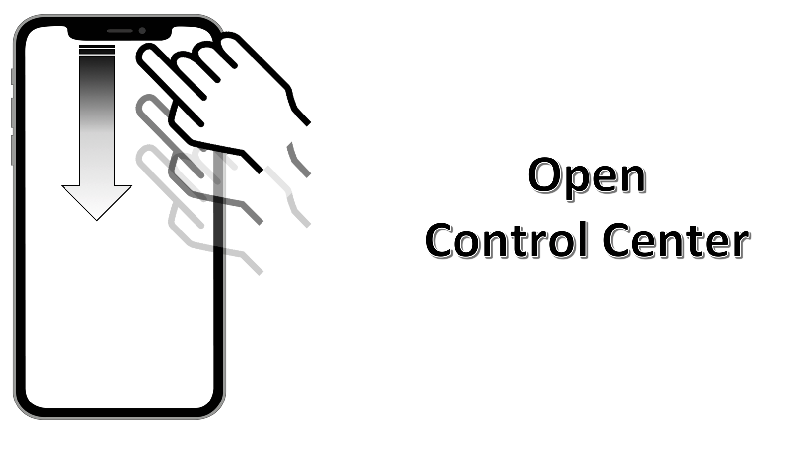
Gesture: flick down with one finger from the top edge of the screen until you feel a double vibration (approximately in the middle of the screen).

Tips & Tricks
Hereunder are unusual features that may be useful to a VoiceOver user on any type of device :
- Read elements from the top.
- Read elements from the selection.
- Start/pause the elements vocalization.
- Locate the selected element.
- Toggle Speech.
- Open Control Center.
- See Notifications.
- Activate the selected element.
- Go back to the previous page.
- Use the item chooser list.
- Select the first element on the page.
- Select the last element on the page.
- Toggle Curtain Screen.
- Set a custom label.
- Use Spotlight Search.
- Open a link in a text view.
Gesture : flick up with 2 fingers anywhere on the screen. 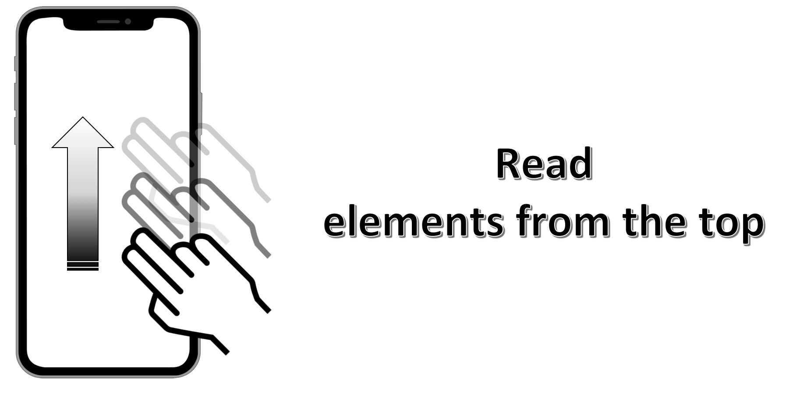
Gesture : flick down with 2 fingers anywhere on the screen.

Gesture : simple-tap with 2 fingers anywhere on the screen.

Gesture : simple-tap with 3 fingers anywhere on the screen. 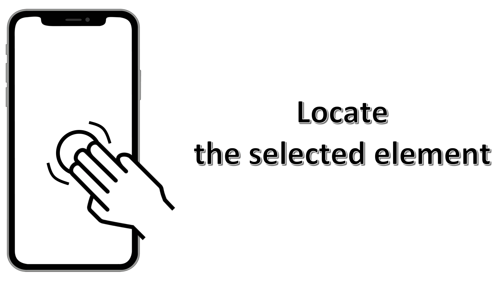
Gesture : double-tap with 3 fingers anywhere on the screen.
If the zoom functionality is activated in the settings, a triple-tap will be mandatory to obtain the same result.
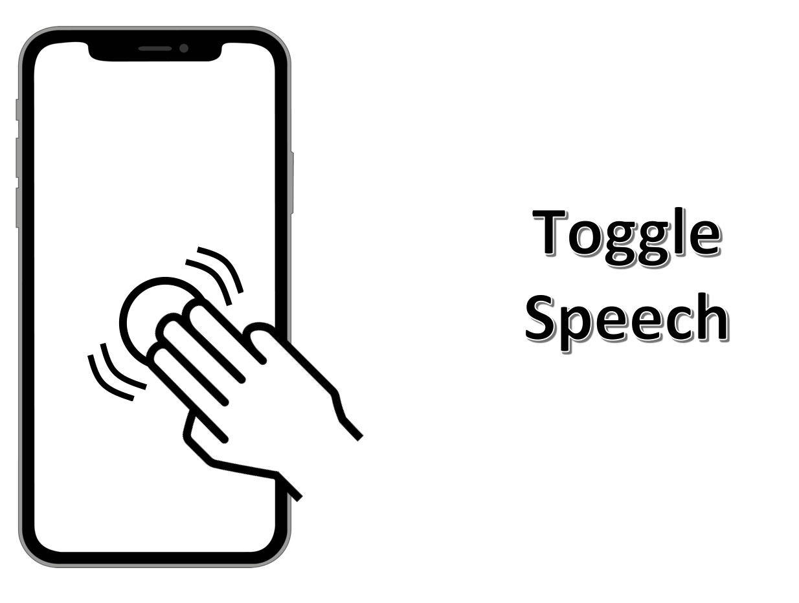
First of all, an element of the status bar must be selected.
Gesture: flick up with 3 fingers anywhere on the screen.

First of all, an element of the status bar must be selected. Gesture: flick down with 3 fingers anywhere on the screen. 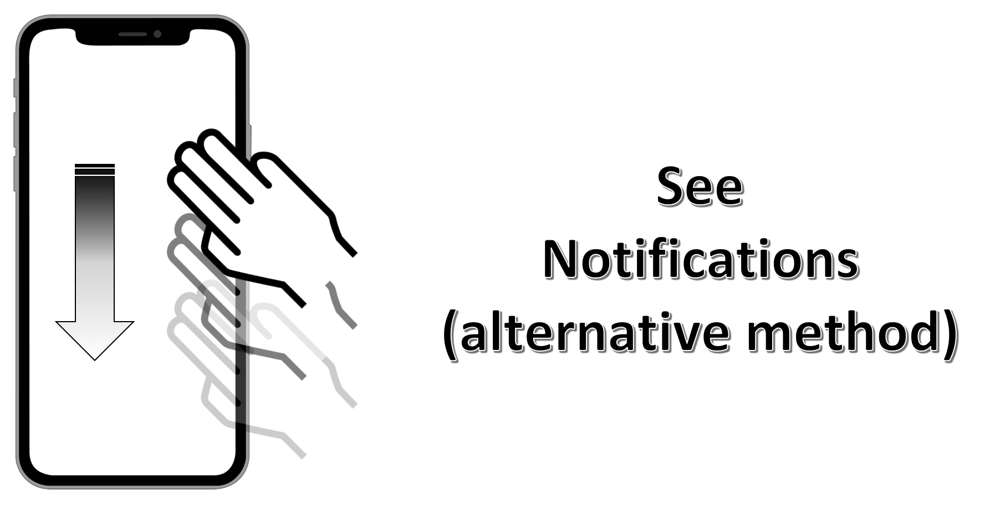
Gesture : select and hold the element with one finger, then make a simple-tap with another finger anywhere on the screen. This is a very useful gesture when using a keyboard : the index finger select the letter while the middle finger makes the simple-tap. 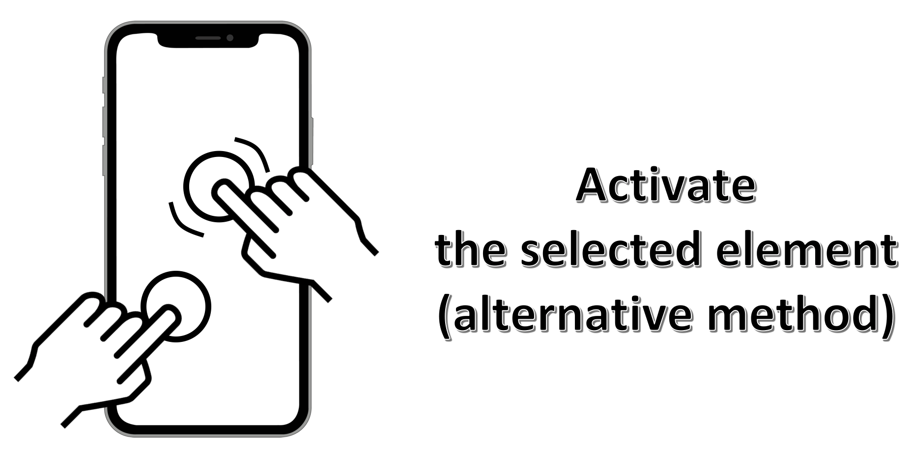
Gesture : swipe with 2 fingers drawing a Z-shape anywhere on the screen.
This ends exactly in the same result as the click on the native back button.

Gesture : triple-tap with 2 fingers anywhere on the screen. 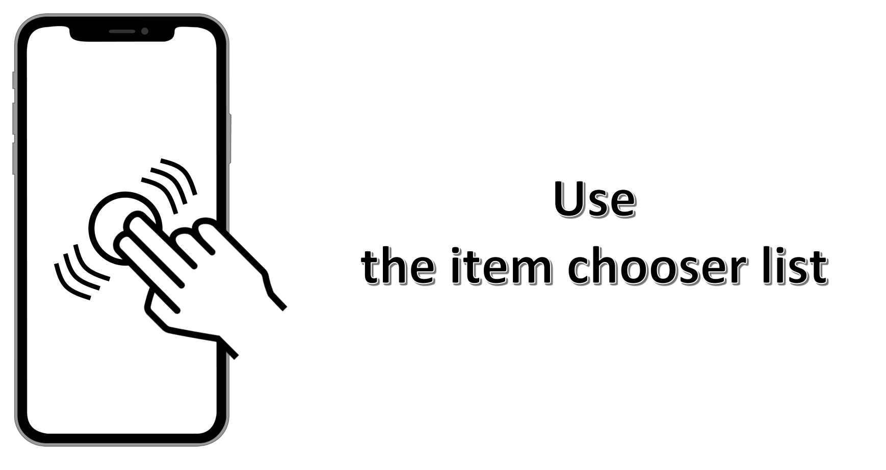
Gesture : simple-tap with 4 fingers in the upper half part of the screen.

Gesture : simple-tap with 4 fingers in the lower half part of the screen. 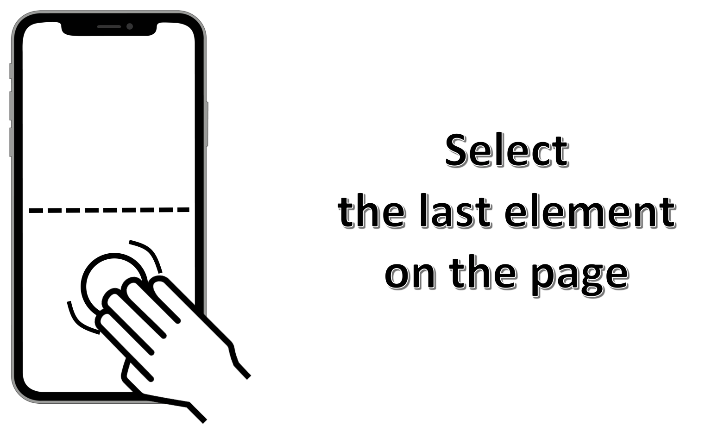
Gesture : triple-tap with 3 fingers anywhere on the screen.
If the zoom functionality is activated in the settings, a quadruple-tap will be mandatory to obtain the same result.
It will allow a VoiceOver using with a dark screen promoting the confidentiality and the longevity of the battery at the same time.
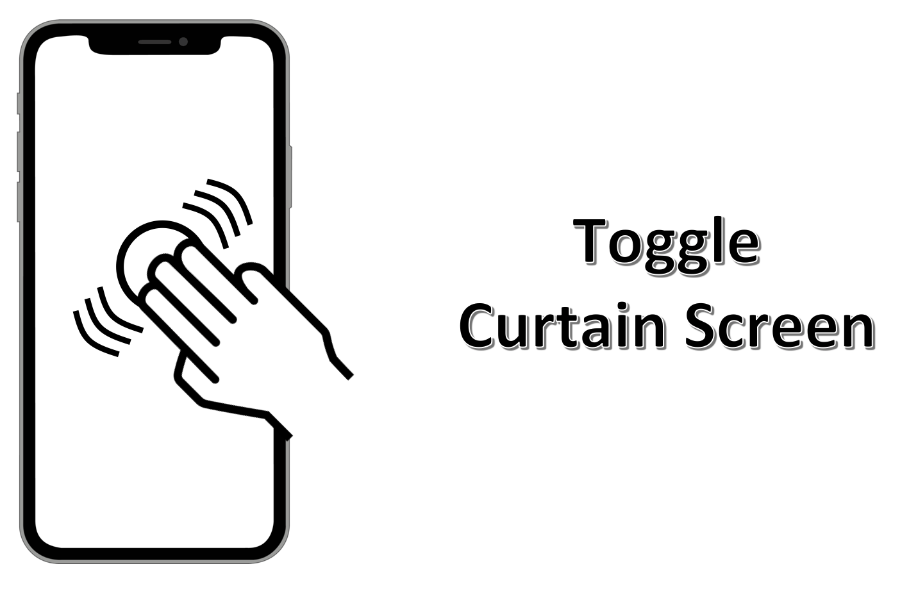
Gesture : double-tap and hold with 2 fingers anywhere on the screen.

Gesture : flick down with 3 fingers anywhere on the screen. 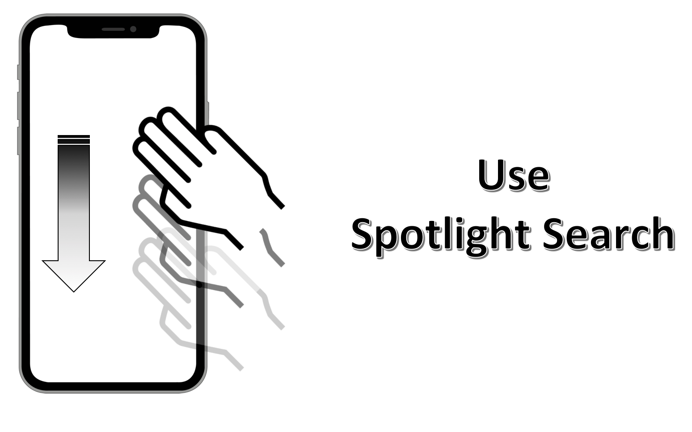
Gesture : double-tap and hold with 1 finger anywhere on the screen.
First, select the 'Links' rotor item before flicking up to reach the desired link.
Then, double-tap and hold with one finger once the link is selected until a popup shows up and an action sheet appears to suggest the appropriate option.